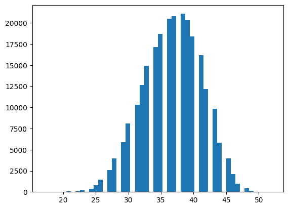
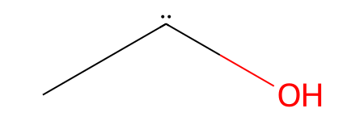
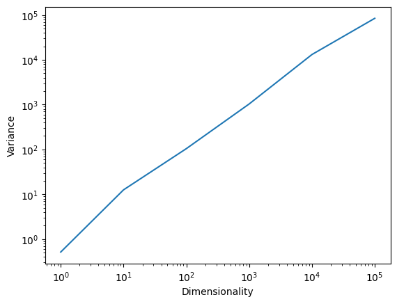

import pandas as pd
from rdkit import Chem
from torch import nn
import torch.nn.functional as F
from torch.utils.data import Dataset, DataLoader
import re
from typing import List
import numpy as np
from math import exp
import matplotlib.pyplot as pltBuilding a GPT that can generate molecules from scratch
machine-learning
llm
teaching
Developing an understanding for how LLMs work.
Molecules can be represented in multitude of ways. One of the most widely used representations is to use text, for example in the so-called SMILES notation. In SMILES notation, a molecule is represented as a string of characters, where each character represents an atom or a bond. For example, the SMILES notation for ethanol is CCO. The one for benzene is c1ccccc1. You see that hydrogen atoms are typically omitted in SMILES notation, and that lower case letters are used for aromatic atoms. There is a full grammar for SMILES notation and various alternative representations, but we will stick to this simple version for this notebook.
Important problems that our final solution will need to be able to solve are:
- dealing with inputs of different lengths (e.g, different number of atoms in different molecules)
- incorporating information about the semantic meaning of the atoms in the molecule (to obtain meaningful molecules, the model, e.g., should probably “know” what kind of bonds carbon can form)
- dealing with the interaction between atoms in the molecule (not all arrangements of atoms are equally likely)
import torch
def get_num_parameters(model):
"""Return the number of trainable parameters in the model."""
return sum(p.numel() for p in model.parameters() if p.requires_grad)
def get_num_parameters_per_layer(model):
"""Return the number of trainable parameters in the model per layer."""
layers = {}
for name, p in model.named_parameters():
if p.requires_grad:
layers[name] = p.numel()
return layers
def set_device():
if torch.backends.mps.is_available():
if torch.backends.mps.is_built():
device = 'mps'
elif torch.cuda.is_available():
device = 'cuda'
else:
device = 'cpu'
return device
device = set_device()Dealing with SMILES
Before we can do anything, we need to obtain data. For doing so, we will need a dataset of SMILES strings. We will use the ZINC dataset which is a public database of commercially-available compounds. We will use the 250k subset of the dataset which contains 250,000 compounds.
!wget 'https://deepchemdata.s3-us-west-1.amazonaws.com/datasets/zinc15_250K_2D.tar.gz'
!tar -xzf zinc15_250K_2D.tar.gz/Users/kevinmaikjablonka/.zshenv:.:1: no such file or directory: /Users/kevinmaikjablonka/.cargo/env
--2024-05-02 12:20:55-- https://deepchemdata.s3-us-west-1.amazonaws.com/datasets/zinc15_250K_2D.tar.gz
Resolving deepchemdata.s3-us-west-1.amazonaws.com (deepchemdata.s3-us-west-1.amazonaws.com)... 52.219.120.49, 52.219.120.145, 52.219.193.50, ...
Connecting to deepchemdata.s3-us-west-1.amazonaws.com (deepchemdata.s3-us-west-1.amazonaws.com)|52.219.120.49|:443... connected.
HTTP request sent, awaiting response... 200 OK
Length: 6941580 (6.6M) [application/x-gzip]
Saving to: ‘zinc15_250K_2D.tar.gz’
zinc15_250K_2D.tar. 100%[===================>] 6.62M 1.25MB/s in 14s
2024-05-02 12:21:11 (497 KB/s) - ‘zinc15_250K_2D.tar.gz’ saved [6941580/6941580]
/Users/kevinmaikjablonka/.zshenv:.:1: no such file or directory: /Users/kevinmaikjablonka/.cargo/envAfter downloading and extracting the dataset, we can load it into memory and take a look at some molecules.
df = pd.read_csv('zinc15_250K_2D.csv')Chem.MolFromSmiles(df['smiles'][0])Before we continue any further, we will also create train/valid and test sets.
train, valid, test = torch.utils.data.random_split(df['smiles'], [200000, 25000, 25000])Tokenization
For training a language model, we will need to split the SMILES into tokens. Tokens are the smallest units of text that the model will work with. The model will learn to predict a molecule token by token. There is not one correct way to do this, but one very common way is to split the SMILES into “chemical tokens”. For this, Philippe Schwaller wrote down a regular expression.
Commonly used other tokenization methods are:
def tokenize(smiles: str) -> List[str]:
"""
Tokenize a SMILES
Args:
smiles (str): SMILES string
Returns:
List[str]: List of tokens
"""
SMI_REGEX_PATTERN = r"""(\[[^\]]+]|Br?|Cl?|N|O|S|P|F|I|b|c|n|o|s|p|\(|\)|\.|=|#|-|\+|\\|\/|:|~|@|\?|>>?|\*|\$|\%[0-9]{2}|[0-9])"""
return re.findall(SMI_REGEX_PATTERN, smiles)The molecule, CCO (ethanol), is tokenized as [‘C’, ‘C’, ‘O’].
tokenize('CCO')['C', 'C', 'O']Converting tokens into IDs
For inputing tokens into a model, we will need to convert them into numbers.
To do so, we will set up a “vocabulary” which is a dictionary that maps tokens to integers. The vocabulary also defines the tokens that are known to the model.
Special tokens
Our model will be fed sequences of fixed length. Our SMILES, however, are of variable length. We will have to pad them to a fixed length. We will use a padding token for this purpose. That is, we will add a specific “[PAD]” token to the vocabulary which only serves the purpose of padding.
Often, we also add other tokens such as [EOS] (end of sequence) or [BOS] (beginning of sequence).
They are typically used as follows:
[BOS]is added at the beginning of each sequence[EOS]is added at the end of each sequence[PAD]is added to the end of each sequence to pad it to a fixed length[UNK]is used to replace tokens that are not in the vocabulary
We can put all of this together in a Tokenizer class.
class Tokenizer:
def __init__(self, tokens: List[str], eos: str = '[EOS]', bos: str = '[BOS]', pad: str = '[PAD]', unk: str = '[UNK]'):
self.tokens = [pad, bos, eos, unk] + tokens
self._token_to_index = {token: index for index, token in enumerate(self.tokens)}
self.index_to_token = {index: token for index, token in enumerate(self.tokens)}
def token_to_index(self, token: str) -> int:
try:
return self._token_to_index[token]
except KeyError:
return self._token_to_index['[UNK]']
def __len__(self):
return len(self.tokens)
def __getitem__(self, item):
return self.token_to_index[item]
def __contains__(self, item):
return item in self.tokens
def encode(self, smiles: str, add_sos: bool=False, add_eos: bool=False) -> List[int]:
"""
Encode a SMILES into a list of indices
Args:
smiles (str): SMILES string
add_sos (bool): Add start of sentence token
add_eos (bool): Add end of sentence token
Returns:
List[int]: List of indices
"""
tokens = []
if add_sos:
tokens.append(self.token_to_index('[BOS]'))
tokens += [self.token_to_index(token) for token in tokenize(smiles)]
if add_eos:
tokens.append(self.token_to_index('[EOS]'))
return tokens
def decode(self, indices: List[int], strip_special_tokens: bool = True) -> str:
"""
Decode a list of indices into a SMILES
Args:
indices (List[int]): List of indices
Returns:
str: SMILES string
"""
decoded = ''.join([self.index_to_token[index] for index in indices])
if strip_special_tokens:
return decoded.replace('[PAD]', '').replace('[BOS]', '').replace('[EOS]', '')
return decodedTo instantiate the tokenizer, we need to pass the list of tokens that we want to use. (This is sometimes called “training” the tokenizer, but in this case, we are just defining the tokens that we want to use.) We will use the following tokens:
tokens = set()
lengths = []
for smiles in train.dataset.values:
tokens_ = tokenize(smiles)
tokens.update(tokens_)
lengths.append(len(tokens_))plt.hist(lengths, bins=50)(array([3.0000e+00, 4.0000e+00, 7.0000e+00, 0.0000e+00, 2.3000e+01,
5.6000e+01, 0.0000e+00, 7.8000e+01, 2.0100e+02, 0.0000e+00,
3.8900e+02, 8.0200e+02, 1.4320e+03, 0.0000e+00, 2.5760e+03,
3.9450e+03, 0.0000e+00, 5.8570e+03, 8.0820e+03, 0.0000e+00,
1.0313e+04, 1.2675e+04, 1.4914e+04, 0.0000e+00, 1.7137e+04,
1.8718e+04, 0.0000e+00, 2.0510e+04, 2.0796e+04, 0.0000e+00,
2.1073e+04, 2.0330e+04, 1.8396e+04, 0.0000e+00, 1.6193e+04,
1.2172e+04, 0.0000e+00, 9.8210e+03, 5.8470e+03, 0.0000e+00,
3.9460e+03, 2.1220e+03, 9.6800e+02, 0.0000e+00, 4.1200e+02,
1.4500e+02, 0.0000e+00, 4.6000e+01, 1.0000e+01, 1.0000e+00]),
array([17. , 17.7, 18.4, 19.1, 19.8, 20.5, 21.2, 21.9, 22.6, 23.3, 24. ,
24.7, 25.4, 26.1, 26.8, 27.5, 28.2, 28.9, 29.6, 30.3, 31. , 31.7,
32.4, 33.1, 33.8, 34.5, 35.2, 35.9, 36.6, 37.3, 38. , 38.7, 39.4,
40.1, 40.8, 41.5, 42.2, 42.9, 43.6, 44.3, 45. , 45.7, 46.4, 47.1,
47.8, 48.5, 49.2, 49.9, 50.6, 51.3, 52. ]),
<BarContainer object of 50 artists>)
tokenizer = Tokenizer(list(tokens))tokenizer.encode('CCO')[45, 45, 38]Embeddings
Currently, we only encode the SMILES strings into a list of indices. There is no inherent meaning to the indices themselves, and we can improve modeling by representing each index as a vector. We call those vectors embeddings, but they are nothing more than a vector representation–like a feature vector–for each index.
Ideally, those vectors ensure that similar indices are close to each other in the embedding space. There are many ways to create those embeddings. But for now it is only important to know this concept.
Positional encoding
The embeddings we just created contain only information about their identity. However, they contain no information about their position in the sequence.
To add positional information, we can add a positional encoding to the embeddings. Again, there are many ways to do this.
A very simple way is called absolute positional encoding. For this we simply add the position index to the embedding vector.
For example
B, T, C = 2, 3, 4 # batch size, sequence length, embedding size
x = torch.rand(B, T, C)
pos = torch.arange(T).unsqueeze(0).repeat(B, 1)Language modeling dataset
A dataset class is a class that inherits from torch.utils.data.Dataset. It is used to load data into a model.
The most important methods of a dataset class are:
__len__: This method returns the length of the dataset. It is used by theDataLoaderto determine how many batches to load.__getitem__: This method returns a single sample from the dataset. It is used by theDataLoaderto load a batch of samples.
class CausalLanguageModelingDataset(Dataset):
def __init__(self, texts, tokenizer, max_length):
self.tokenizer = tokenizer
self.texts = texts
self.max_length = max_length
self.inputs = []
self.targets = []
for text in texts:
input_ids = np.array(tokenizer.encode(text))
if len(input_ids) > self.max_length:
continue
input_ids = self._pad_right(input_ids, self.max_length)
# make next token the target create datasets with sliding windows
for i in range(1, len(input_ids)):
self.inputs.append(self._pad_left(input_ids[:i], self.max_length))
self.targets.append([input_ids[i]])
def __len__(self):
return len(self.inputs)
def __getitem__(self, idx):
input_ids = self.inputs[idx]
target_ids = self.targets[idx]
return torch.tensor(input_ids, dtype=torch.long), torch.tensor(target_ids, dtype=torch.long)
def _pad_left(self, sequence, max_len):
pad_value = self.tokenizer.token_to_index('[PAD]')
padded_sequence = np.full(max_len, pad_value)
padded_sequence[-len(sequence):] = sequence
return padded_sequence
def _pad_right(self, sequence, max_len):
pad_value = self.tokenizer.token_to_index('[PAD]')
padded_sequence = np.full(max_len, pad_value)
padded_sequence[:len(sequence)] = sequence
return padded_sequenceYou hopefully note something very interesting in this dataset: Based on one SMILES, we can create multiple training examples, because we can slide a window over the SMILES and predict the next token. (Note that our implementation is relatively naiive and is optimized to make this point clear. In practice, you should use dedicated methods, e.g., from the transformers library, to create language model datasets.)
A simple bigram model
The simplest language model is a bigram model. In a bigram model, we predict the next token based on the previous token. A bigram model is the simplest form of n-gram model. In an n-gram model, we predict the next token based on the previous n tokens.
\(N\)-gram models are a simple but effective way to model language. The idea is to predict the next word in a sentence given the previous \(n-1\) words. For example, in a 2-gram (bigram) model, we would predict the next word given only the previous word. In a 3-gram model, we would predict the next word given the previous two words. In general, we would predict the next word given the previous \(n-1\) words.
Formally, we can write down the bigram model as follows:
\[ p(w_i|w_{i-1}) = \frac{C(w_{i-1}, w_i)}{C(w_{i-1})} \]
where \(w_i\) is the \(i\)-th word in the sentence, \(C(w_{i-1}, w_i)\) is the number of times the bigram \(w_{i-1}, w_i\) occurs in the training set, and \(C(w_{i-1})\) is the number of times the word \(w_{i-1}\) occurs in the training set.
Since the bigram model only considers the previous word/token, we only need a lookup table.
Such lookup tables are implemented in PyTorch as nn.Embedding. Keep in mind that an embedding layer is nothing fancy. It works like inputting a one-hot encoded vector in a linear layer:
What are embedding layers?
Sebastian Raschka made a great figure about that.
Embedding layers are often perceived as a fancy operation that we apply to encode the inputs (each word tokens) for large language models.
— Sebastian Raschka (@rasbt) January 6, 2023
But embedding layers = fully-connected layers on one-hot encoded inputs. They just replace expensive matrix multiplications w index look-ups. pic.twitter.com/0I3AFk4por
You can try it yourself using the following code (taken from Sebastian’s tweet):
You can first use an embedding layer to encode the indices and then use a linear layer to do the same. You will see that the results are the same.
Here for example, we encode the indices [2, 3, 1] into a 5-dimensional vector using an embedding layer and a linear layer.
torch.manual_seed(123);
idx = torch.tensor([2, 3, 1]) # 3 training examples
num_idx = max(idx)+1
out_dim = 5
embedding = torch.nn.Embedding(num_idx, out_dim)
embedding(idx)The code for the linear layer is:
torch.manual_seed(123);
idx = torch.tensor([2, 3, 1]) # 3 training examples
one_hot = torch.nn.functional.one_hot(idx, num_classes=num_idx)
linear = torch.nn.Linear(num_idx, out_dim, bias=False)
linear.weight = torch.nn.Parameter(embedding.weight.T.detach()) # nn.Linear does xW^T, so we need to transpose the weight matrix
linear(one_hot.float())Using the Embedding layer, we can create a simple Bigram model.
class BigramModel(nn.Module):
def __init__(self, vocab_size: int = 40):
super().__init__()
# "learnable dictionary" that maps one token to another token
self.mapping_layer = nn.Embedding(vocab_size, vocab_size)
def forward(self, x: torch.Tensor) -> torch.Tensor:
# the forward pass only consists of a lookup in the mapping layer
return self.mapping_layer(x)
def loss(self, x, y):
# x has shape (batch_size, sequence_length)
predictions = self.forward(x)
B, T, C = predictions.shape
# predictions has shape (batch_size, sequence_length, vocab_size)
predictions = predictions.view(B*T, C)
# y has the shape (batch_size, sequence_length)
y = y.view(B*T)
# we use cross entropy loss to train the model
return F.cross_entropy(predictions, y)bigram = BigramModel(10)Given a token ID, the model predict how likely each token of the vocabulary is to be the next. Right now, the model is not trained, so it will predict the next token randomly.
F.softmax(bigram(torch.tensor([1])))/var/folders/m9/_txh68y946s4pxy1x2wnd3lh0000gn/T/ipykernel_51170/730608109.py:1: UserWarning: Implicit dimension choice for softmax has been deprecated. Change the call to include dim=X as an argument.
F.softmax(bigram(torch.tensor([1])))tensor([[0.0465, 0.0137, 0.0966, 0.0857, 0.3933, 0.0212, 0.0415, 0.0283, 0.0550,
0.2181]], grad_fn=<SoftmaxBackward0>)For generating a sequence, we can implement a generate method that iteratively predicts the next token and appends it to the sequence. We can then use this method to generate a sequence of a given length.
class BigramModel(nn.Module):
def __init__(self, vocab_size):
super().__init__()
# read of the logits of the next token from table
self.mapping_table = nn.Embedding(vocab_size, vocab_size)
def forward(self, x):
# x is a tensor of shape (B, T)
return self.mapping_table(x) # returns tensor of shape (batch_size, time_steps, vocab_size)
def loss(self, x, y):
# x is a tensor of shape (B, T)
logits = self.forward(x) # (B, T, C)
B, T, C = logits.shape
# Note that that the implementation below is because of how we - for educational purposes - have defined the dataset
# A better way is to have inputs and outputs of the same length (and to not manually code the sliding window
# but to instead use a causal mask)
# in our case, y only contains the next token
# so we only care about the last token in Bigram
logits = logits[:, -1, :]
logits = logits.view(B, C)
y = y.view(B)
return F.cross_entropy(logits, y)
def generate(self, x, max_new_tokens=100):
# x is a tensor of shape (B, T)
# we generate max_new_tokens new tokens
new_tokens = []
for _t in range(max_new_tokens):
logits = self.forward(x) # (B, T, C)
logits = logits[:, -1, :] # we only care about the last token in Bigram, hence we bow have shape (B, C)
probs = F.softmax(logits, dim=-1) # we generate probabilities for the next token
# torch.multinomial(probs, num_samples=1) returns a tensor of shape (B, 1)
# where each element is the index of the sampled token
next_token = torch.multinomial(probs, num_samples=1)
new_tokens.append(next_token)
x = torch.cat([x, next_token], dim=1)
return x
To evaluate the model performance, we will use the helper function below.
As performance metric we will use perplexity. Perplexity is a metric that measures how well a probability model predicts a sample. It is defined as \(2^H\), where \(H\) is the cross entropy loss. The lower the perplexity, the better the model.
To better understand it, let’s recall a few things:
LLMs are trained to predict the probability of a word given the previous words. For instance, in the sentence “She went to the…”, the model predicts the probability of what the next word could be (e.g., store, park, etc.).
Cross entropy is a measure of the difference between two probability distributions - in this case, the distribution predicted by the model and the actual distribution of words in the language. A lower cross-entropy means the model’s predictions are closer to the actual distribution. We can calculate it as follows:
\[H(p,q) = - \sum_{x} p(x) \log q(x)\]
where \(p\) is the actual distribution and \(q\) is the predicted distribution.
Perplexity can be thought of as the “effective number of choices” the model feels it has when making a prediction. A lower perplexity indicates that the model is more confident (or less “perplexed”) about its predictions.
For example, if a model has a perplexity of 10 on a dataset, it means that, on average, each time it tries to predict the next word, it’s as uncertain as if it were choosing uniformly and randomly among 10 options. If the perplexity is 100, it’s as uncertain as if it were choosing among 100 options, and so on.
You can find further information about such metrics here.
@torch.no_grad()
def estimate_perplexity(model, data_loader):
# set the model to evaluation mode, i.e.,
model.eval()
total_loss = 0
total_count = 0
for x, y in data_loader:
x = x.to(device)
y = y.to(device)
loss = model.loss(x, y)
total_loss += loss.item()
total_count += 1
return exp(total_loss / total_count)Training the model
To train the model, we will use a simple training loop and the Adam optimizer.
The role of the Adam optimizer is to update the parameters of the model using a technique called mini-batch stochastic gradient descent. The idea is that we update the weights in the direction of the gradient of the loss function, which we estimate on a small batch of data. The learning rate controls how big the steps are that we take in the direction of the gradient.
Setting learning rate is not trivial, you can find more background here.
It is import to remember to use the zero_grad function to clear the gradients before computing the gradients for the current batch. Also, remember to call loss.backward() to compute the gradients for the current batch.
For now, we will use a very simple approach (to reuse our old dataloader) and just predict the second token given the first one.
model = BigramModel(len(tokenizer))train_loader = torch.utils.data.DataLoader(CausalLanguageModelingDataset(train, tokenizer, max_length=40), batch_size=2048, shuffle=True)
valid_loader = torch.utils.data.DataLoader(CausalLanguageModelingDataset(valid, tokenizer, max_length=40), batch_size=2048)
test_loader = torch.utils.data.DataLoader(CausalLanguageModelingDataset(test, tokenizer, max_length=40), batch_size=2048)def train_model(model, train_loader, val_loader, epochs, lr, eval_every=100):
# set up the optimizer
optimizer = torch.optim.Adam(model.parameters(), lr=lr)
model.to(device)
# start training
# set the model to train mode
model.train()
for epoch in range(epochs):
# iterate over the training data
for i, (x,y) in enumerate(train_loader):
# move the data to the device
x = x.to(device)
y = y.to(device)
loss = model.loss(x,y)
# clear the gradients
optimizer.zero_grad()
# compute the gradients
loss.backward()
# update the parameters
optimizer.step()
# print the loss every eval_every iterations
if i % eval_every == 0:
print(f"Epoch {epoch}, iter {i}, train loss {loss.item():.3f}, val perplexity {estimate_perplexity(model, val_loader):.5f}")train_model(model, train_loader, valid_loader, epochs=10, lr=1e-3, eval_every=100)Epoch 0, iter 0, train loss 4.247, val perplexity 68.89613
Epoch 0, iter 100, train loss 4.084, val perplexity 58.78415
Epoch 0, iter 200, train loss 3.887, val perplexity 50.44378
Epoch 0, iter 300, train loss 3.770, val perplexity 43.52746
Epoch 0, iter 400, train loss 3.647, val perplexity 37.78621
Epoch 0, iter 500, train loss 3.483, val perplexity 32.99921
Epoch 0, iter 600, train loss 3.302, val perplexity 28.98877
Epoch 0, iter 700, train loss 3.246, val perplexity 25.62722
Epoch 0, iter 800, train loss 3.124, val perplexity 22.79053
Epoch 0, iter 900, train loss 3.014, val perplexity 20.38747
Epoch 0, iter 1000, train loss 2.925, val perplexity 18.34650
Epoch 0, iter 1100, train loss 2.821, val perplexity 16.60504
Epoch 0, iter 1200, train loss 2.695, val perplexity 15.11995
Epoch 0, iter 1300, train loss 2.618, val perplexity 13.84288
Epoch 0, iter 1400, train loss 2.565, val perplexity 12.74738
Epoch 0, iter 1500, train loss 2.524, val perplexity 11.80145
Epoch 0, iter 1600, train loss 2.432, val perplexity 10.98570
Epoch 0, iter 1700, train loss 2.295, val perplexity 10.27731
Epoch 0, iter 1800, train loss 2.271, val perplexity 9.66229
Epoch 0, iter 1900, train loss 2.235, val perplexity 9.12911
Epoch 0, iter 2000, train loss 2.189, val perplexity 8.66075
Epoch 0, iter 2100, train loss 2.085, val perplexity 8.24934
Epoch 0, iter 2200, train loss 2.058, val perplexity 7.88684
Epoch 0, iter 2300, train loss 2.025, val perplexity 7.56794
Epoch 0, iter 2400, train loss 2.033, val perplexity 7.28616
Epoch 0, iter 2500, train loss 1.934, val perplexity 7.03687
Epoch 0, iter 2600, train loss 1.882, val perplexity 6.81432
Epoch 0, iter 2700, train loss 1.890, val perplexity 6.61714
Epoch 0, iter 2800, train loss 1.857, val perplexity 6.44163
Epoch 0, iter 2900, train loss 1.860, val perplexity 6.28394
Epoch 0, iter 3000, train loss 1.831, val perplexity 6.14318
Epoch 1, iter 0, train loss 1.806, val perplexity 6.11426
Epoch 1, iter 100, train loss 1.799, val perplexity 5.99120
Epoch 1, iter 200, train loss 1.772, val perplexity 5.88139
Epoch 1, iter 300, train loss 1.758, val perplexity 5.78283
Epoch 1, iter 400, train loss 1.718, val perplexity 5.69448
Epoch 1, iter 500, train loss 1.756, val perplexity 5.61472
Epoch 1, iter 600, train loss 1.741, val perplexity 5.54318
Epoch 1, iter 700, train loss 1.676, val perplexity 5.47892
Epoch 1, iter 800, train loss 1.695, val perplexity 5.42134
Epoch 1, iter 900, train loss 1.671, val perplexity 5.37019
Epoch 1, iter 1000, train loss 1.693, val perplexity 5.32408
Epoch 1, iter 1100, train loss 1.683, val perplexity 5.28262
Epoch 1, iter 1200, train loss 1.651, val perplexity 5.24482
Epoch 1, iter 1300, train loss 1.681, val perplexity 5.21134
Epoch 1, iter 1400, train loss 1.600, val perplexity 5.18109
Epoch 1, iter 1500, train loss 1.627, val perplexity 5.15382
Epoch 1, iter 1600, train loss 1.621, val perplexity 5.12923
Epoch 1, iter 1700, train loss 1.597, val perplexity 5.10679
Epoch 1, iter 1800, train loss 1.592, val perplexity 5.08645
Epoch 1, iter 1900, train loss 1.603, val perplexity 5.06797
Epoch 1, iter 2000, train loss 1.622, val perplexity 5.05094
Epoch 1, iter 2100, train loss 1.600, val perplexity 5.03557
Epoch 1, iter 2200, train loss 1.618, val perplexity 5.02141
Epoch 1, iter 2300, train loss 1.611, val perplexity 5.00810
Epoch 1, iter 2400, train loss 1.586, val perplexity 4.99597
Epoch 1, iter 2500, train loss 1.587, val perplexity 4.98479
Epoch 1, iter 2600, train loss 1.626, val perplexity 4.97436
Epoch 1, iter 2700, train loss 1.594, val perplexity 4.96466
Epoch 1, iter 2800, train loss 1.626, val perplexity 4.95561
Epoch 1, iter 2900, train loss 1.627, val perplexity 4.94720
Epoch 1, iter 3000, train loss 1.615, val perplexity 4.93930
Epoch 2, iter 0, train loss 1.595, val perplexity 4.93764
Epoch 2, iter 100, train loss 1.605, val perplexity 4.93042
Epoch 2, iter 200, train loss 1.562, val perplexity 4.92365
Epoch 2, iter 300, train loss 1.597, val perplexity 4.91732
Epoch 2, iter 400, train loss 1.589, val perplexity 4.91128
Epoch 2, iter 500, train loss 1.604, val perplexity 4.90558
Epoch 2, iter 600, train loss 1.591, val perplexity 4.90023
Epoch 2, iter 700, train loss 1.555, val perplexity 4.89515
Epoch 2, iter 800, train loss 1.597, val perplexity 4.89030
Epoch 2, iter 900, train loss 1.568, val perplexity 4.88572
Epoch 2, iter 1000, train loss 1.568, val perplexity 4.88150
Epoch 2, iter 1100, train loss 1.596, val perplexity 4.87742
Epoch 2, iter 1200, train loss 1.540, val perplexity 4.87349
Epoch 2, iter 1300, train loss 1.585, val perplexity 4.86991
Epoch 2, iter 1400, train loss 1.620, val perplexity 4.86635
Epoch 2, iter 1500, train loss 1.595, val perplexity 4.86316
Epoch 2, iter 1600, train loss 1.609, val perplexity 4.86005
Epoch 2, iter 1700, train loss 1.590, val perplexity 4.85700
Epoch 2, iter 1800, train loss 1.584, val perplexity 4.85425
Epoch 2, iter 1900, train loss 1.588, val perplexity 4.85149
Epoch 2, iter 2000, train loss 1.593, val perplexity 4.84899
Epoch 2, iter 2100, train loss 1.611, val perplexity 4.84653
Epoch 2, iter 2200, train loss 1.570, val perplexity 4.84416
Epoch 2, iter 2300, train loss 1.630, val perplexity 4.84193
Epoch 2, iter 2400, train loss 1.548, val perplexity 4.83973
Epoch 2, iter 2500, train loss 1.544, val perplexity 4.83775
Epoch 2, iter 2600, train loss 1.594, val perplexity 4.83583
Epoch 2, iter 2700, train loss 1.606, val perplexity 4.83394
Epoch 2, iter 2800, train loss 1.567, val perplexity 4.83223
Epoch 2, iter 2900, train loss 1.606, val perplexity 4.83054
Epoch 2, iter 3000, train loss 1.544, val perplexity 4.82894
Epoch 3, iter 0, train loss 1.610, val perplexity 4.82853
Epoch 3, iter 100, train loss 1.624, val perplexity 4.82708
Epoch 3, iter 200, train loss 1.573, val perplexity 4.82555
Epoch 3, iter 300, train loss 1.583, val perplexity 4.82419
Epoch 3, iter 400, train loss 1.561, val perplexity 4.82284
Epoch 3, iter 500, train loss 1.545, val perplexity 4.82160
Epoch 3, iter 600, train loss 1.577, val perplexity 4.82032
Epoch 3, iter 700, train loss 1.536, val perplexity 4.81921
Epoch 3, iter 800, train loss 1.574, val perplexity 4.81807
Epoch 3, iter 900, train loss 1.568, val perplexity 4.81694
Epoch 3, iter 1000, train loss 1.594, val perplexity 4.81590
Epoch 3, iter 1100, train loss 1.532, val perplexity 4.81492
Epoch 3, iter 1200, train loss 1.520, val perplexity 4.81411
Epoch 3, iter 1300, train loss 1.597, val perplexity 4.81317
Epoch 3, iter 1400, train loss 1.563, val perplexity 4.81233
Epoch 3, iter 1500, train loss 1.625, val perplexity 4.81148
Epoch 3, iter 1600, train loss 1.571, val perplexity 4.81063
Epoch 3, iter 1700, train loss 1.590, val perplexity 4.80991
Epoch 3, iter 1800, train loss 1.570, val perplexity 4.80916
Epoch 3, iter 1900, train loss 1.585, val perplexity 4.80845
Epoch 3, iter 2000, train loss 1.617, val perplexity 4.80771
Epoch 3, iter 2100, train loss 1.578, val perplexity 4.80707
Epoch 3, iter 2200, train loss 1.589, val perplexity 4.80649
Epoch 3, iter 2300, train loss 1.561, val perplexity 4.80590
Epoch 3, iter 2400, train loss 1.553, val perplexity 4.80530
Epoch 3, iter 2500, train loss 1.560, val perplexity 4.80477
Epoch 3, iter 2600, train loss 1.571, val perplexity 4.80423
Epoch 3, iter 2700, train loss 1.622, val perplexity 4.80373
Epoch 3, iter 2800, train loss 1.595, val perplexity 4.80326
Epoch 3, iter 2900, train loss 1.562, val perplexity 4.80281
Epoch 3, iter 3000, train loss 1.553, val perplexity 4.80236
Epoch 4, iter 0, train loss 1.520, val perplexity 4.80227
Epoch 4, iter 100, train loss 1.570, val perplexity 4.80192
Epoch 4, iter 200, train loss 1.569, val perplexity 4.80140
Epoch 4, iter 300, train loss 1.576, val perplexity 4.80111
Epoch 4, iter 400, train loss 1.543, val perplexity 4.80074
Epoch 4, iter 500, train loss 1.610, val perplexity 4.80041
Epoch 4, iter 600, train loss 1.576, val perplexity 4.80006
Epoch 4, iter 700, train loss 1.572, val perplexity 4.79980
Epoch 4, iter 800, train loss 1.531, val perplexity 4.79941
Epoch 4, iter 900, train loss 1.592, val perplexity 4.79916
Epoch 4, iter 1000, train loss 1.616, val perplexity 4.79881
Epoch 4, iter 1100, train loss 1.552, val perplexity 4.79852
Epoch 4, iter 1200, train loss 1.555, val perplexity 4.79816
Epoch 4, iter 1300, train loss 1.559, val perplexity 4.79789
Epoch 4, iter 1400, train loss 1.575, val perplexity 4.79779
Epoch 4, iter 1500, train loss 1.551, val perplexity 4.79757
Epoch 4, iter 1600, train loss 1.560, val perplexity 4.79729
Epoch 4, iter 1700, train loss 1.561, val perplexity 4.79705
Epoch 4, iter 1800, train loss 1.601, val perplexity 4.79683
Epoch 4, iter 1900, train loss 1.623, val perplexity 4.79668
Epoch 4, iter 2000, train loss 1.599, val perplexity 4.79643
Epoch 4, iter 2100, train loss 1.590, val perplexity 4.79631
Epoch 4, iter 2200, train loss 1.558, val perplexity 4.79615
Epoch 4, iter 2300, train loss 1.525, val perplexity 4.79596
Epoch 4, iter 2400, train loss 1.539, val perplexity 4.79583
Epoch 4, iter 2500, train loss 1.563, val perplexity 4.79558
Epoch 4, iter 2600, train loss 1.591, val perplexity 4.79545
Epoch 4, iter 2700, train loss 1.521, val perplexity 4.79524
Epoch 4, iter 2800, train loss 1.575, val perplexity 4.79513
Epoch 4, iter 2900, train loss 1.576, val perplexity 4.79506
Epoch 4, iter 3000, train loss 1.547, val perplexity 4.79490
Epoch 5, iter 0, train loss 1.539, val perplexity 4.79486
Epoch 5, iter 100, train loss 1.568, val perplexity 4.79480
Epoch 5, iter 200, train loss 1.569, val perplexity 4.79471
Epoch 5, iter 300, train loss 1.601, val perplexity 4.79453
Epoch 5, iter 400, train loss 1.583, val perplexity 4.79449
Epoch 5, iter 500, train loss 1.590, val perplexity 4.79446
Epoch 5, iter 600, train loss 1.556, val perplexity 4.79428
Epoch 5, iter 700, train loss 1.540, val perplexity 4.79427
Epoch 5, iter 800, train loss 1.568, val perplexity 4.79408
Epoch 5, iter 900, train loss 1.548, val perplexity 4.79403
Epoch 5, iter 1000, train loss 1.571, val perplexity 4.79394
Epoch 5, iter 1100, train loss 1.543, val perplexity 4.79381
Epoch 5, iter 1200, train loss 1.574, val perplexity 4.79374
Epoch 5, iter 1300, train loss 1.602, val perplexity 4.79369
Epoch 5, iter 1400, train loss 1.572, val perplexity 4.79358
Epoch 5, iter 1500, train loss 1.583, val perplexity 4.79348
Epoch 5, iter 1600, train loss 1.588, val perplexity 4.79347
Epoch 5, iter 1700, train loss 1.565, val perplexity 4.79347
Epoch 5, iter 1800, train loss 1.569, val perplexity 4.79332
Epoch 5, iter 1900, train loss 1.548, val perplexity 4.79323
Epoch 5, iter 2000, train loss 1.559, val perplexity 4.79323
Epoch 5, iter 2100, train loss 1.599, val perplexity 4.79318
Epoch 5, iter 2200, train loss 1.581, val perplexity 4.79318
Epoch 5, iter 2300, train loss 1.530, val perplexity 4.79305
Epoch 5, iter 2400, train loss 1.576, val perplexity 4.79312
Epoch 5, iter 2500, train loss 1.561, val perplexity 4.79304
Epoch 5, iter 2600, train loss 1.553, val perplexity 4.79298
Epoch 5, iter 2700, train loss 1.535, val perplexity 4.79300
Epoch 5, iter 2800, train loss 1.569, val perplexity 4.79297
Epoch 5, iter 2900, train loss 1.543, val perplexity 4.79285
Epoch 5, iter 3000, train loss 1.589, val perplexity 4.79279
Epoch 6, iter 0, train loss 1.545, val perplexity 4.79279
Epoch 6, iter 100, train loss 1.613, val perplexity 4.79277
Epoch 6, iter 200, train loss 1.548, val perplexity 4.79275
Epoch 6, iter 300, train loss 1.573, val perplexity 4.79275
Epoch 6, iter 400, train loss 1.556, val perplexity 4.79269
Epoch 6, iter 500, train loss 1.555, val perplexity 4.79263
Epoch 6, iter 600, train loss 1.528, val perplexity 4.79261
Epoch 6, iter 700, train loss 1.527, val perplexity 4.79269
Epoch 6, iter 800, train loss 1.540, val perplexity 4.79256
Epoch 6, iter 900, train loss 1.585, val perplexity 4.79248
Epoch 6, iter 1000, train loss 1.564, val perplexity 4.79251
Epoch 6, iter 1100, train loss 1.542, val perplexity 4.79248
Epoch 6, iter 1200, train loss 1.613, val perplexity 4.79246
Epoch 6, iter 1300, train loss 1.575, val perplexity 4.79240
Epoch 6, iter 1400, train loss 1.543, val perplexity 4.79233
Epoch 6, iter 1500, train loss 1.572, val perplexity 4.79232
Epoch 6, iter 1600, train loss 1.608, val perplexity 4.79226
Epoch 6, iter 1700, train loss 1.562, val perplexity 4.79224
Epoch 6, iter 1800, train loss 1.584, val perplexity 4.79229
Epoch 6, iter 1900, train loss 1.536, val perplexity 4.79232
Epoch 6, iter 2000, train loss 1.524, val perplexity 4.79231
Epoch 6, iter 2100, train loss 1.536, val perplexity 4.79227
Epoch 6, iter 2200, train loss 1.563, val perplexity 4.79223
Epoch 6, iter 2300, train loss 1.573, val perplexity 4.79226
Epoch 6, iter 2400, train loss 1.538, val perplexity 4.79230
Epoch 6, iter 2500, train loss 1.573, val perplexity 4.79224
Epoch 6, iter 2600, train loss 1.606, val perplexity 4.79219
Epoch 6, iter 2700, train loss 1.539, val perplexity 4.79223
Epoch 6, iter 2800, train loss 1.574, val perplexity 4.79216
Epoch 6, iter 2900, train loss 1.582, val perplexity 4.79214
Epoch 6, iter 3000, train loss 1.581, val perplexity 4.79211
Epoch 7, iter 0, train loss 1.586, val perplexity 4.79209
Epoch 7, iter 100, train loss 1.586, val perplexity 4.79212
Epoch 7, iter 200, train loss 1.585, val perplexity 4.79217
Epoch 7, iter 300, train loss 1.583, val perplexity 4.79227
Epoch 7, iter 400, train loss 1.573, val perplexity 4.79208
Epoch 7, iter 500, train loss 1.599, val perplexity 4.79205
Epoch 7, iter 600, train loss 1.531, val perplexity 4.79208
Epoch 7, iter 700, train loss 1.606, val perplexity 4.79202
Epoch 7, iter 800, train loss 1.589, val perplexity 4.79202
Epoch 7, iter 900, train loss 1.543, val perplexity 4.79212
Epoch 7, iter 1000, train loss 1.576, val perplexity 4.79213
Epoch 7, iter 1100, train loss 1.563, val perplexity 4.79207
Epoch 7, iter 1200, train loss 1.581, val perplexity 4.79206
Epoch 7, iter 1300, train loss 1.591, val perplexity 4.79199
Epoch 7, iter 1400, train loss 1.562, val perplexity 4.79195
Epoch 7, iter 1500, train loss 1.533, val perplexity 4.79199
Epoch 7, iter 1600, train loss 1.536, val perplexity 4.79202
Epoch 7, iter 1700, train loss 1.554, val perplexity 4.79206
Epoch 7, iter 1800, train loss 1.565, val perplexity 4.79201
Epoch 7, iter 1900, train loss 1.541, val perplexity 4.79199
Epoch 7, iter 2000, train loss 1.533, val perplexity 4.79195
Epoch 7, iter 2100, train loss 1.555, val perplexity 4.79194
Epoch 7, iter 2200, train loss 1.558, val perplexity 4.79192
Epoch 7, iter 2300, train loss 1.527, val perplexity 4.79196
Epoch 7, iter 2400, train loss 1.599, val perplexity 4.79195
Epoch 7, iter 2500, train loss 1.630, val perplexity 4.79196
Epoch 7, iter 2600, train loss 1.619, val perplexity 4.79197
Epoch 7, iter 2700, train loss 1.537, val perplexity 4.79194
Epoch 7, iter 2800, train loss 1.553, val perplexity 4.79197
Epoch 7, iter 2900, train loss 1.560, val perplexity 4.79203
Epoch 7, iter 3000, train loss 1.589, val perplexity 4.79190
Epoch 8, iter 0, train loss 1.558, val perplexity 4.79190
Epoch 8, iter 100, train loss 1.543, val perplexity 4.79199
Epoch 8, iter 200, train loss 1.567, val perplexity 4.79198
Epoch 8, iter 300, train loss 1.599, val perplexity 4.79195
Epoch 8, iter 400, train loss 1.560, val perplexity 4.79198
Epoch 8, iter 500, train loss 1.569, val perplexity 4.79191
Epoch 8, iter 600, train loss 1.549, val perplexity 4.79200
Epoch 8, iter 700, train loss 1.585, val perplexity 4.79195
Epoch 8, iter 800, train loss 1.590, val perplexity 4.79198
Epoch 8, iter 900, train loss 1.585, val perplexity 4.79204
Epoch 8, iter 1000, train loss 1.582, val perplexity 4.79201
Epoch 8, iter 1100, train loss 1.558, val perplexity 4.79200
Epoch 8, iter 1200, train loss 1.520, val perplexity 4.79202
Epoch 8, iter 1300, train loss 1.588, val perplexity 4.79201
Epoch 8, iter 1400, train loss 1.556, val perplexity 4.79201
Epoch 8, iter 1500, train loss 1.529, val perplexity 4.79189
Epoch 8, iter 1600, train loss 1.569, val perplexity 4.79186
Epoch 8, iter 1700, train loss 1.539, val perplexity 4.79182
Epoch 8, iter 1800, train loss 1.636, val perplexity 4.79178
Epoch 8, iter 1900, train loss 1.536, val perplexity 4.79179
Epoch 8, iter 2000, train loss 1.547, val perplexity 4.79180
Epoch 8, iter 2100, train loss 1.598, val perplexity 4.79194
Epoch 8, iter 2200, train loss 1.527, val perplexity 4.79190
Epoch 8, iter 2300, train loss 1.567, val perplexity 4.79184
Epoch 8, iter 2400, train loss 1.564, val perplexity 4.79183
Epoch 8, iter 2500, train loss 1.553, val perplexity 4.79192
Epoch 8, iter 2600, train loss 1.542, val perplexity 4.79191
Epoch 8, iter 2700, train loss 1.563, val perplexity 4.79192
Epoch 8, iter 2800, train loss 1.567, val perplexity 4.79188
Epoch 8, iter 2900, train loss 1.580, val perplexity 4.79177
Epoch 8, iter 3000, train loss 1.551, val perplexity 4.79179
Epoch 9, iter 0, train loss 1.567, val perplexity 4.79179
Epoch 9, iter 100, train loss 1.571, val perplexity 4.79185
Epoch 9, iter 200, train loss 1.576, val perplexity 4.79187
Epoch 9, iter 300, train loss 1.578, val perplexity 4.79184
Epoch 9, iter 400, train loss 1.593, val perplexity 4.79181
Epoch 9, iter 500, train loss 1.595, val perplexity 4.79183
Epoch 9, iter 600, train loss 1.592, val perplexity 4.79173
Epoch 9, iter 700, train loss 1.554, val perplexity 4.79169
Epoch 9, iter 800, train loss 1.579, val perplexity 4.79179
Epoch 9, iter 900, train loss 1.583, val perplexity 4.79188
Epoch 9, iter 1000, train loss 1.532, val perplexity 4.79181
Epoch 9, iter 1100, train loss 1.561, val perplexity 4.79181
Epoch 9, iter 1200, train loss 1.540, val perplexity 4.79177
Epoch 9, iter 1300, train loss 1.555, val perplexity 4.79179
Epoch 9, iter 1400, train loss 1.550, val perplexity 4.79187
Epoch 9, iter 1500, train loss 1.554, val perplexity 4.79184
Epoch 9, iter 1600, train loss 1.602, val perplexity 4.79190
Epoch 9, iter 1700, train loss 1.556, val perplexity 4.79185
Epoch 9, iter 1800, train loss 1.571, val perplexity 4.79184
Epoch 9, iter 1900, train loss 1.525, val perplexity 4.79194
Epoch 9, iter 2000, train loss 1.588, val perplexity 4.79188
Epoch 9, iter 2100, train loss 1.530, val perplexity 4.79193
Epoch 9, iter 2200, train loss 1.588, val perplexity 4.79187
Epoch 9, iter 2300, train loss 1.578, val perplexity 4.79190
Epoch 9, iter 2400, train loss 1.572, val perplexity 4.79186
Epoch 9, iter 2500, train loss 1.553, val perplexity 4.79189
Epoch 9, iter 2600, train loss 1.567, val perplexity 4.79179
Epoch 9, iter 2700, train loss 1.572, val perplexity 4.79172
Epoch 9, iter 2800, train loss 1.558, val perplexity 4.79176
Epoch 9, iter 2900, train loss 1.534, val perplexity 4.79190
Epoch 9, iter 3000, train loss 1.570, val perplexity 4.79183We can now test the model by generating new SMILES strings. We will start with a random token and generate 100 new tokens.
a = torch.tensor([[4]])
a = a.to(device)
generation = model.generate(a, max_new_tokens=30).cpu().numpy()
smiles = tokenizer.decode(generation[0])smiles'[C@@](O)C'Chem.MolFromSmiles(smiles)
This does not look too bad, but we can do better (if you would run the code multiple times, you would see that the results are not always a valid SMILES).
Making tokens talk using attention
In our bigram models we made predictions based on the previous word. This is clearly not enough to make good predictions. We can improve our model by taking into more past tokens into account.
One naïve way to incorporate more context into our model might be to simply “pool” (features of) the preceding tokens. This kind of pooling is similar to what we do in GNNs, e.g., to combine node embeddings.
A very simple pooling operation is the average of the embeddings of the preceding tokens. Later, when we will implement self-attention, we will not use a simple average, but a special weighted average. The code for that will use similar ideas (in particular, the causal mask).
B, T, C = 2, 5, 3 # batch size, time (sequence length), channels (features)
# create random data of shape (B, T, C)
x = torch.randn(B,T,C)
x_bag_of_words = torch.zeros((B,T,C))
for b in range(B):
for t in range(T):
x_prev = x[b,:t+1] # shape (t, C)
x_bag_of_words[b, t] = torch.mean(x_prev, dim=0) # shape (C,)This nested for loop is slow. However, we can implement this in an efficient way if we observe a few things:
If we want to predict next tokens, we do not want to let the future tokens influence the prediction. Therefore, we can use a so-called causal mask to mask out the future tokens.
A matrix multiplication can be thought of as a weighted sum of the rows of the matrix, where the weights are given by the columns of the matrix. This is easy to see if we think of the following extremes:
- We can compute the sum of the rows of a matrix by multiplying the matrix with a lower-triangular matrix filled with ones.
- We can compute the mean of the rows of a matrix by multiplying the matrix with a lower-triangular matrix filled with ones and dividing by the number of ones in the lower-triangular matrix.
In torch we can use tril to create a lower-triangular matrix.
lower_triangular_mask = torch.tril(torch.ones((T,T)))
weight = torch.ones((T,T))
weight = torch.masked_fill(weight, lower_triangular_mask==0, float('-inf'))
weight = torch.softmax(weight, dim=1)weight tensor([[1.0000, 0.0000, 0.0000, 0.0000, 0.0000],
[0.5000, 0.5000, 0.0000, 0.0000, 0.0000],
[0.3333, 0.3333, 0.3333, 0.0000, 0.0000],
[0.2500, 0.2500, 0.2500, 0.2500, 0.0000],
[0.2000, 0.2000, 0.2000, 0.2000, 0.2000]])We used the softmax function to normalize the weights in the rows.
weight @ xtensor([[[ 2.7713, 0.4576, 2.1195],
[ 1.8329, 0.5148, 0.9036],
[ 0.9509, 0.0041, 0.9987],
[ 0.3513, -0.1176, 0.5793],
[ 0.1679, -0.1204, 0.5011]],
[[-0.3739, -0.3857, -0.7389],
[-0.5810, -0.5098, -1.7110],
[-0.3690, -0.4240, -1.1107],
[-0.0953, -0.3274, -0.5838],
[ 0.1815, -0.3243, -0.4050]]])In the simple average we used above, all past tokens were treated equally. However, it might be useful to pay more attention to certain tokens than to others. That is, we want to gather information from the past – but do this in a data-dependent way. The attention mechanism allows us to do this.
The attention mechanism does this by having a query vector \(q\) and a key vector \(k\) for each token. We then define “similarity” or “relevance” between two tokens \(i\) and \(j\) as the dot product between their query and key vectors, which we derive from the embeddings of the tokens by multiplying them with the learnable weight matrices \(W_q\) and \(W_k\).
\[ \text{sim}(i, j) = a(i, h) = q_ik_j^T = \text{emb}_i W_q W_k^T \text{emb}_j^T \]
Note that this gives us now a way to refine the weight_matrix we used above. Instead of weighting all tokens equally, we can now learn a weight matrix that tells us how much attention to pay to each token.
To start the implementation, we will first derive query and key vectors from the embeddings. We will then compute the similarity matrix and apply the softmax function to normalize the weights.
B, T, C = 2, 5, 3 # batch size, time (sequence length), channels (features)
x = torch.randn(B,T,C)
head_size = 16 # hyperparameter
# with bias = False, it only perform matrix multiplication
key_layer = nn.Linear(C, head_size, bias=False)
query_layer = nn.Linear(C, head_size, bias=False)The attention matrix defined above is now a simple matrix multiplication between the query and key vectors. The attention matrix is then normalized using a softmax function.
query = query_layer(x) # shape (B, T, head_size)
key = key_layer(x) # shape (B, T, head_size)attention = query @ key.transpose(1,2) # shape (B, T, T)Note that the shape of the attention matrix is (B, T, T). The attention matrix is a matrix where each row corresponds to a query and each column corresponds to a key. The value at position (i, j) in the attention matrix is the attention score between the i-th query and the j-th key.
attentiontensor([[[-0.1377, 0.3945, -0.1910, -0.3166, 0.5705],
[ 0.2263, -1.1153, 0.0163, 1.0653, -0.9115],
[-0.3157, 0.5693, -0.7330, -0.4713, 1.6627],
[-0.1497, 0.9112, -0.0370, -1.1351, 1.1552],
[ 0.6523, -1.6878, 1.3558, 1.8505, -4.0957]],
[[-0.4646, 0.6153, -0.3081, 1.0515, 0.5917],
[ 0.3343, -1.2245, -0.7600, -1.6172, -1.2108],
[-0.6809, -0.0852, -1.6940, 0.4584, -0.1262],
[ 0.7665, -1.8694, -0.5606, -2.6797, -1.8310],
[ 0.2937, -1.1780, -0.7986, -1.5304, -1.1683]]],
grad_fn=<UnsafeViewBackward0>)But to avoid the future tokens to influence the prediction, we will use a causal mask. We do this the same way as we did above, by using torch.tril.
lower_triangular_mask = torch.tril(torch.ones((T,T)))
attention = torch.masked_fill(attention, lower_triangular_mask==0, float('-inf'))
attention = torch.softmax(attention, dim=2) # shape (B, T, T), softmax along the last dimension
out = attention @ x # shape (B, T, T) @ (B, T, C) = (B, T, C)In the attention mechanism popularized in the “attention is all you need” paper we add even more expressive power by transforming x before we multiply it with the attention matrix. We call this transformed x the value vector (or matrix). The full implementation of the attention mechanism is then:
B, T, C = 2, 5, 3 # batch size, time (sequence length), channels (features)
x = torch.randn(B,T,C)
head_size = 16 # hyperparameter
# what do I contain
# with bias = False, it only perform matrix multiplication
key = nn.Linear(C, head_size, bias=False)
# what am I looking for
query = nn.Linear(C, head_size, bias=False)
# what I will tell you
value = nn.Linear(C, head_size, bias=False) # Output: (B, T, head_size)
# self-attention because k, q, v come all from the same input
k = key(x) # shape (B, T, head_size)
q = query(x) # shape (B, T, head_size)
v = value(x) # shape (B, T, head_size)
# now, we want to compute the attention
# we need to compute the dot product between k and q
weight_matrix = q @ k.transpose(-2, -1) # shape (B, T, head_size) @ (B, head_size, T) = (B, T, T)
# now we add the masking
# we want to mask out the future
# this is what is known as "decoder" block
lower_triangular = torch.tril(torch.ones((T,T)))
weight_matrix = weight_matrix.masked_fill(lower_triangular==0, float('-inf'))
# use softmax to normalize
weight_matrix = torch.softmax(weight_matrix, dim=-1)/np.sqrt(head_size) # shape (B, T, T)
out = weight_matrix @ v # shape (B, T, T) @ (B, T, head_size) = (B, T, head_size)Interlude: Why do we divide by sqrt(head_size) in the self-attention mechanism?
We used one more trick to make the training more stable. We scaled the weight_matrix by the square root of the head_size. This is because the variance of the dot product is proportional to the dimensionality of the vectors.. Not scaling the weight matrix can lead to numerical instability.
To see this, let’s run a quick experiment
variances = []
dimensions = [1, 10, 100, 1000, 10000, 100000]
for d in dimensions:
k = torch.randn(B, T, d)
q = torch.randn(B, T, d)
# compute the batched matrix product between k and q
weight_matrix = torch.bmm(q, k.transpose(-2, -1)) # shape (B, T, head_size) @ (B, head_size, T) = (B, T, T)
variances.append(weight_matrix.var())plt.plot(dimensions, variances)
plt.xscale('log')
plt.yscale('log')
plt.xlabel('Dimensionality')
plt.ylabel('Variance')Text(0, 0.5, 'Variance')
This has an important impact when we apply softmax. Positive and negative “outliers” will be “sequeezed” to 1 and 0. You can test this by creating a 1D tensor (a) and applying softmax on it. Then multiply the values in the tensor (a) and again apply softmax.
print(F.softmax(torch.tensor([1.,2.,3.])),F.softmax(torch.tensor([1.,2.,3.])*100) )tensor([0.0900, 0.2447, 0.6652]) tensor([0.0000e+00, 3.7835e-44, 1.0000e+00])/var/folders/m9/_txh68y946s4pxy1x2wnd3lh0000gn/T/ipykernel_51170/1895642280.py:1: UserWarning: Implicit dimension choice for softmax has been deprecated. Change the call to include dim=X as an argument.
print(F.softmax(torch.tensor([1.,2.,3.])),F.softmax(torch.tensor([1.,2.,3.])*100) )The attention mechanism
Written as a formula, the attention mechanism is:
\[ \text{Attention}(Q, K, V) = \text{softmax}\left(\frac{QK^T}{\sqrt{d_k}}\right)V \]
where \(Q\) is the query matrix, \(K\) is the key matrix, and \(V\) is the value matrix.
Refactoring into a module
class Head(nn.Module):
def __init__(self, n_embed, block_size, head_size):
super().__init__()
self.key = nn.Linear(n_embed, head_size, bias=False)
self.query = nn.Linear(n_embed, head_size, bias=False)
self.value = nn.Linear(n_embed, head_size, bias=False)
self.register_buffer('lower_triangular', torch.tril(torch.ones(block_size, block_size)))
def forward(self, x):
B, T, C = x.shape
key = self.key(x)
query = self.query(x) # B, T, head
value = self.value(x) # B, T, head
weight_matrix = query @ key.transpose(-2, -1) * C ** (-0.5) # shape (B, T, head_size) @ (B, head_size, T) = (B, T, T)
weight_matrix = weight_matrix.masked_fill(self.lower_triangular[:T, :T].logical_not(), float('-inf'))
weight_matrix = F.softmax(weight_matrix, dim=-1)
out = weight_matrix @ value # shape (B, T, T) @ (B, T, head_size) = (B, T, head_size)
return outRevamped Bigram Model
Now, we can use it to “refine” our bigram model. We will additionally also perform two more changes:
- we will add positional embeddings: We will add the positional embeddings to the input embeddings. This will allow the model to take into account the position of the tokens in the sequence.
- we will add one more indirection: One simple way of improving the expressiveness is to add one linear layer. While in the bigram model we only had one embedding layer (that mapped inputs of size
vocab_sizetovocab_size), we can now change the embedding layer to map inputs of sizevocab_sizetoembedding_size. We can then add a linear layer that maps inputs of sizeembedding_sizetovocab_size. This way, we can learn a more complex mapping from the embeddings to the next token.
class SelfAttentionModel(nn.Module):
def __init__(self, vocab_size, embedding_dim, sequence_length=100, head_size=4):
super().__init__()
# map the input ids to embeddings
self.token_embedding = nn.Embedding(vocab_size, embedding_dim)
# add positional embeddings (each position has its own learnable embedding vector)
self.positional_embedding = nn.Embedding(sequence_length, embedding_dim)
# the self-attention layer
self.attention = Head(embedding_dim, sequence_length, head_size)
# the linear layer that maps the output of the self-attention layer to the vocabulary size
self.lm_head = nn.Linear(head_size, vocab_size)
# store the sequence length
self.sequence_length = sequence_length
def forward(self, x):
B, T = x.shape
x = self.token_embedding(x) # B, T, C
x += self.positional_embedding(torch.arange(T, device=device)) # B, T, C
x = self.attention(x) # B, T, head_size
x = self.lm_head(x) # B, T, vocab_size
# The prediction is for each token a probability distribution over the vocabulary
# this indicates how likely each token is the next token
return x
def loss(self, x, y):
# x is a tensor of shape (B, T)
logits = self.forward(x) # (B, T, C)
B, T, C = logits.shape
# Note that that the implementation below is because of how we - for educational purposes - have defined the dataset
# A better way is to have inputs and outputs of the same length (and to not manually code the sliding window
# but to instead use a causal mask)
logits = logits[:, -1, :] # we only care about the last token
logits = logits.view(B, C)
y = y.view(B)
loss = F.cross_entropy(logits, y)
return loss
def generate(self, x, max_new_tokens=100):
# x is a tensor of shape (B, T)
# we generate max_new_tokens new tokens
for _t in range(max_new_tokens):
logits = self.forward(x)
logits = logits[:, -1, :]
probs = F.softmax(logits, dim=-1)
next_token = torch.multinomial(probs, num_samples=1)
x = torch.cat([x, next_token], dim=1)
return x
model = SelfAttentionModel(len(tokenizer.tokens), embedding_dim=128, sequence_length=40, head_size=16)
train_model(model, train_loader, valid_loader, epochs=10, lr=1e-3)Epoch 0, iter 0, train loss 3.889, val perplexity 46.51448
Epoch 0, iter 100, train loss 1.883, val perplexity 6.66113
Epoch 0, iter 200, train loss 1.638, val perplexity 5.01923
Epoch 0, iter 300, train loss 1.536, val perplexity 4.70023
Epoch 0, iter 400, train loss 1.548, val perplexity 4.58597
Epoch 0, iter 500, train loss 1.504, val perplexity 4.38599
Epoch 0, iter 600, train loss 1.441, val perplexity 4.25886
Epoch 0, iter 700, train loss 1.469, val perplexity 4.18827
Epoch 0, iter 800, train loss 1.392, val perplexity 4.15055
Epoch 0, iter 900, train loss 1.401, val perplexity 4.07537
Epoch 0, iter 1000, train loss 1.405, val perplexity 3.99194
Epoch 0, iter 1100, train loss 1.363, val perplexity 3.90569
Epoch 0, iter 1200, train loss 1.358, val perplexity 3.86271
Epoch 0, iter 1300, train loss 1.274, val perplexity 3.82789
Epoch 0, iter 1400, train loss 1.339, val perplexity 3.80141
Epoch 0, iter 1500, train loss 1.336, val perplexity 3.77024
Epoch 0, iter 1600, train loss 1.320, val perplexity 3.74822
Epoch 0, iter 1700, train loss 1.306, val perplexity 3.71429
Epoch 0, iter 1800, train loss 1.319, val perplexity 3.67578
Epoch 0, iter 1900, train loss 1.317, val perplexity 3.65535
Epoch 0, iter 2000, train loss 1.317, val perplexity 3.58378
Epoch 0, iter 2100, train loss 1.286, val perplexity 3.55721
Epoch 0, iter 2200, train loss 1.259, val perplexity 3.53200
Epoch 0, iter 2300, train loss 1.223, val perplexity 3.53396
Epoch 0, iter 2400, train loss 1.276, val perplexity 3.51743
Epoch 0, iter 2500, train loss 1.250, val perplexity 3.48564
Epoch 0, iter 2600, train loss 1.247, val perplexity 3.47809
Epoch 0, iter 2700, train loss 1.269, val perplexity 3.46225
Epoch 0, iter 2800, train loss 1.275, val perplexity 3.46858
Epoch 0, iter 2900, train loss 1.243, val perplexity 3.45377
Epoch 0, iter 3000, train loss 1.246, val perplexity 3.45255
Epoch 1, iter 0, train loss 1.241, val perplexity 3.43818
Epoch 1, iter 100, train loss 1.225, val perplexity 3.43851
Epoch 1, iter 200, train loss 1.247, val perplexity 3.41987
Epoch 1, iter 300, train loss 1.211, val perplexity 3.43688
Epoch 1, iter 400, train loss 1.240, val perplexity 3.40300
Epoch 1, iter 500, train loss 1.222, val perplexity 3.37348
Epoch 1, iter 600, train loss 1.164, val perplexity 3.33770
Epoch 1, iter 700, train loss 1.235, val perplexity 3.32229
Epoch 1, iter 800, train loss 1.180, val perplexity 3.31498
Epoch 1, iter 900, train loss 1.176, val perplexity 3.32122
Epoch 1, iter 1000, train loss 1.178, val perplexity 3.29877
Epoch 1, iter 1100, train loss 1.198, val perplexity 3.28752
Epoch 1, iter 1200, train loss 1.145, val perplexity 3.28561
Epoch 1, iter 1300, train loss 1.212, val perplexity 3.26526
Epoch 1, iter 1400, train loss 1.222, val perplexity 3.27166
Epoch 1, iter 1500, train loss 1.179, val perplexity 3.26950
Epoch 1, iter 1600, train loss 1.183, val perplexity 3.25246
Epoch 1, iter 1700, train loss 1.204, val perplexity 3.25885
Epoch 1, iter 1800, train loss 1.181, val perplexity 3.25160
Epoch 1, iter 1900, train loss 1.163, val perplexity 3.24419
Epoch 1, iter 2000, train loss 1.137, val perplexity 3.23455
Epoch 1, iter 2100, train loss 1.203, val perplexity 3.23678
Epoch 1, iter 2200, train loss 1.216, val perplexity 3.23619
Epoch 1, iter 2300, train loss 1.185, val perplexity 3.23046
Epoch 1, iter 2400, train loss 1.203, val perplexity 3.22142
Epoch 1, iter 2500, train loss 1.188, val perplexity 3.22653
Epoch 1, iter 2600, train loss 1.157, val perplexity 3.21694
Epoch 1, iter 2700, train loss 1.187, val perplexity 3.21164
Epoch 1, iter 2800, train loss 1.130, val perplexity 3.20060
Epoch 1, iter 2900, train loss 1.143, val perplexity 3.19579
Epoch 1, iter 3000, train loss 1.195, val perplexity 3.19294
Epoch 2, iter 0, train loss 1.126, val perplexity 3.20773
Epoch 2, iter 100, train loss 1.202, val perplexity 3.19967
Epoch 2, iter 200, train loss 1.174, val perplexity 3.18501
Epoch 2, iter 300, train loss 1.188, val perplexity 3.18238
Epoch 2, iter 400, train loss 1.138, val perplexity 3.18118
Epoch 2, iter 500, train loss 1.136, val perplexity 3.18097
Epoch 2, iter 600, train loss 1.168, val perplexity 3.17053
Epoch 2, iter 700, train loss 1.120, val perplexity 3.15899
Epoch 2, iter 800, train loss 1.159, val perplexity 3.15819
Epoch 2, iter 900, train loss 1.118, val perplexity 3.17680
Epoch 2, iter 1000, train loss 1.097, val perplexity 3.15708
Epoch 2, iter 1100, train loss 1.157, val perplexity 3.15672
Epoch 2, iter 1200, train loss 1.170, val perplexity 3.16435
Epoch 2, iter 1300, train loss 1.156, val perplexity 3.16167
Epoch 2, iter 1400, train loss 1.141, val perplexity 3.15502
Epoch 2, iter 1500, train loss 1.138, val perplexity 3.13853
Epoch 2, iter 1600, train loss 1.179, val perplexity 3.14547
Epoch 2, iter 1700, train loss 1.116, val perplexity 3.14258
Epoch 2, iter 1800, train loss 1.125, val perplexity 3.14083
Epoch 2, iter 1900, train loss 1.158, val perplexity 3.14367
Epoch 2, iter 2000, train loss 1.153, val perplexity 3.15006
Epoch 2, iter 2100, train loss 1.071, val perplexity 3.14123
Epoch 2, iter 2200, train loss 1.087, val perplexity 3.13333
Epoch 2, iter 2300, train loss 1.100, val perplexity 3.13311
Epoch 2, iter 2400, train loss 1.177, val perplexity 3.12805
Epoch 2, iter 2500, train loss 1.139, val perplexity 3.12344
Epoch 2, iter 2600, train loss 1.172, val perplexity 3.13074
Epoch 2, iter 2700, train loss 1.152, val perplexity 3.12924
Epoch 2, iter 2800, train loss 1.169, val perplexity 3.12610
Epoch 2, iter 2900, train loss 1.146, val perplexity 3.12171
Epoch 2, iter 3000, train loss 1.104, val perplexity 3.12374
Epoch 3, iter 0, train loss 1.138, val perplexity 3.11965
Epoch 3, iter 100, train loss 1.130, val perplexity 3.11538
Epoch 3, iter 200, train loss 1.149, val perplexity 3.12729
Epoch 3, iter 300, train loss 1.142, val perplexity 3.12698
Epoch 3, iter 400, train loss 1.184, val perplexity 3.11725
Epoch 3, iter 500, train loss 1.139, val perplexity 3.12115
Epoch 3, iter 600, train loss 1.109, val perplexity 3.12539
Epoch 3, iter 700, train loss 1.147, val perplexity 3.11643
Epoch 3, iter 800, train loss 1.129, val perplexity 3.12205
Epoch 3, iter 900, train loss 1.150, val perplexity 3.12080
Epoch 3, iter 1000, train loss 1.148, val perplexity 3.10857
Epoch 3, iter 1100, train loss 1.158, val perplexity 3.10570
Epoch 3, iter 1200, train loss 1.160, val perplexity 3.11082
Epoch 3, iter 1300, train loss 1.096, val perplexity 3.10202
Epoch 3, iter 1400, train loss 1.136, val perplexity 3.11115
Epoch 3, iter 1500, train loss 1.160, val perplexity 3.12037
Epoch 3, iter 1600, train loss 1.115, val perplexity 3.10564
Epoch 3, iter 1700, train loss 1.141, val perplexity 3.10538
Epoch 3, iter 1800, train loss 1.103, val perplexity 3.10921
Epoch 3, iter 1900, train loss 1.126, val perplexity 3.11212
Epoch 3, iter 2000, train loss 1.118, val perplexity 3.10539
Epoch 3, iter 2100, train loss 1.119, val perplexity 3.09715
Epoch 3, iter 2200, train loss 1.113, val perplexity 3.10317
Epoch 3, iter 2300, train loss 1.120, val perplexity 3.09733
Epoch 3, iter 2400, train loss 1.144, val perplexity 3.09822
Epoch 3, iter 2500, train loss 1.134, val perplexity 3.10760
Epoch 3, iter 2600, train loss 1.179, val perplexity 3.09432
Epoch 3, iter 2700, train loss 1.162, val perplexity 3.11052
Epoch 3, iter 2800, train loss 1.158, val perplexity 3.11656
Epoch 3, iter 2900, train loss 1.139, val perplexity 3.09534
Epoch 3, iter 3000, train loss 1.179, val perplexity 3.10282
Epoch 4, iter 0, train loss 1.124, val perplexity 3.10232
Epoch 4, iter 100, train loss 1.141, val perplexity 3.09656
Epoch 4, iter 200, train loss 1.145, val perplexity 3.09358
Epoch 4, iter 300, train loss 1.115, val perplexity 3.09710
Epoch 4, iter 400, train loss 1.169, val perplexity 3.09681
Epoch 4, iter 500, train loss 1.161, val perplexity 3.10573
Epoch 4, iter 600, train loss 1.101, val perplexity 3.10116
Epoch 4, iter 700, train loss 1.121, val perplexity 3.08844
Epoch 4, iter 800, train loss 1.062, val perplexity 3.09668
Epoch 4, iter 900, train loss 1.069, val perplexity 3.09515
Epoch 4, iter 1000, train loss 1.113, val perplexity 3.08247
Epoch 4, iter 1100, train loss 1.160, val perplexity 3.08931
Epoch 4, iter 1200, train loss 1.130, val perplexity 3.08274
Epoch 4, iter 1300, train loss 1.183, val perplexity 3.09541
Epoch 4, iter 1400, train loss 1.150, val perplexity 3.09614
Epoch 4, iter 1500, train loss 1.149, val perplexity 3.08139
Epoch 4, iter 1600, train loss 1.131, val perplexity 3.08812
Epoch 4, iter 1700, train loss 1.143, val perplexity 3.09312
Epoch 4, iter 1800, train loss 1.184, val perplexity 3.08449
Epoch 4, iter 1900, train loss 1.115, val perplexity 3.07812
Epoch 4, iter 2000, train loss 1.145, val perplexity 3.08757
Epoch 4, iter 2100, train loss 1.097, val perplexity 3.08763
Epoch 4, iter 2200, train loss 1.086, val perplexity 3.08908
Epoch 4, iter 2300, train loss 1.118, val perplexity 3.08329
Epoch 4, iter 2400, train loss 1.092, val perplexity 3.07425
Epoch 4, iter 2500, train loss 1.077, val perplexity 3.07932
Epoch 4, iter 2600, train loss 1.124, val perplexity 3.08189
Epoch 4, iter 2700, train loss 1.151, val perplexity 3.09261
Epoch 4, iter 2800, train loss 1.119, val perplexity 3.07745
Epoch 4, iter 2900, train loss 1.099, val perplexity 3.07391
Epoch 4, iter 3000, train loss 1.123, val perplexity 3.09299
Epoch 5, iter 0, train loss 1.118, val perplexity 3.08209
Epoch 5, iter 100, train loss 1.072, val perplexity 3.08084
Epoch 5, iter 200, train loss 1.117, val perplexity 3.09895
Epoch 5, iter 300, train loss 1.109, val perplexity 3.08415
Epoch 5, iter 400, train loss 1.151, val perplexity 3.07640
Epoch 5, iter 500, train loss 1.115, val perplexity 3.07644
Epoch 5, iter 600, train loss 1.173, val perplexity 3.06789
Epoch 5, iter 700, train loss 1.118, val perplexity 3.07208
Epoch 5, iter 800, train loss 1.114, val perplexity 3.06964
Epoch 5, iter 900, train loss 1.123, val perplexity 3.06521
Epoch 5, iter 1000, train loss 1.117, val perplexity 3.07689
Epoch 5, iter 1100, train loss 1.105, val perplexity 3.06304
Epoch 5, iter 1200, train loss 1.155, val perplexity 3.07131
Epoch 5, iter 1300, train loss 1.093, val perplexity 3.06734
Epoch 5, iter 1400, train loss 1.058, val perplexity 3.07034
Epoch 5, iter 1500, train loss 1.149, val perplexity 3.06001
Epoch 5, iter 1600, train loss 1.124, val perplexity 3.06218
Epoch 5, iter 1700, train loss 1.131, val perplexity 3.06177
Epoch 5, iter 1800, train loss 1.130, val perplexity 3.05882
Epoch 5, iter 1900, train loss 1.120, val perplexity 3.06167
Epoch 5, iter 2000, train loss 1.075, val perplexity 3.05305
Epoch 5, iter 2100, train loss 1.100, val perplexity 3.06269
Epoch 5, iter 2200, train loss 1.124, val perplexity 3.06574
Epoch 5, iter 2300, train loss 1.126, val perplexity 3.06347
Epoch 5, iter 2400, train loss 1.113, val perplexity 3.05534
Epoch 5, iter 2500, train loss 1.125, val perplexity 3.08321
Epoch 5, iter 2600, train loss 1.099, val perplexity 3.05985
Epoch 5, iter 2700, train loss 1.158, val perplexity 3.06098
Epoch 5, iter 2800, train loss 1.146, val perplexity 3.05263
Epoch 5, iter 2900, train loss 1.171, val perplexity 3.05878
Epoch 5, iter 3000, train loss 1.108, val perplexity 3.05882
Epoch 6, iter 0, train loss 1.063, val perplexity 3.06478
Epoch 6, iter 100, train loss 1.143, val perplexity 3.05597
Epoch 6, iter 200, train loss 1.086, val perplexity 3.06243
Epoch 6, iter 300, train loss 1.102, val perplexity 3.06036
Epoch 6, iter 400, train loss 1.130, val perplexity 3.05022
Epoch 6, iter 500, train loss 1.109, val perplexity 3.05755
Epoch 6, iter 600, train loss 1.142, val perplexity 3.05923
Epoch 6, iter 700, train loss 1.132, val perplexity 3.05757
Epoch 6, iter 800, train loss 1.085, val perplexity 3.05189
Epoch 6, iter 900, train loss 1.148, val perplexity 3.05542
Epoch 6, iter 1000, train loss 1.133, val perplexity 3.06147
Epoch 6, iter 1100, train loss 1.145, val perplexity 3.05915
Epoch 6, iter 1200, train loss 1.124, val perplexity 3.04750
Epoch 6, iter 1300, train loss 1.142, val perplexity 3.05894
Epoch 6, iter 1400, train loss 1.103, val perplexity 3.04810
Epoch 6, iter 1500, train loss 1.111, val perplexity 3.05013
Epoch 6, iter 1600, train loss 1.144, val perplexity 3.04804
Epoch 6, iter 1700, train loss 1.106, val perplexity 3.05326
Epoch 6, iter 1800, train loss 1.145, val perplexity 3.05340
Epoch 6, iter 1900, train loss 1.105, val perplexity 3.04603
Epoch 6, iter 2000, train loss 1.058, val perplexity 3.04617
Epoch 6, iter 2100, train loss 1.127, val perplexity 3.06316
Epoch 6, iter 2200, train loss 1.136, val perplexity 3.05213
Epoch 6, iter 2300, train loss 1.125, val perplexity 3.05162
Epoch 6, iter 2400, train loss 1.102, val perplexity 3.03990
Epoch 6, iter 2500, train loss 1.106, val perplexity 3.04742
Epoch 6, iter 2600, train loss 1.132, val perplexity 3.04673
Epoch 6, iter 2700, train loss 1.089, val perplexity 3.04486
Epoch 6, iter 2800, train loss 1.144, val perplexity 3.04106
Epoch 6, iter 2900, train loss 1.092, val perplexity 3.04550
Epoch 6, iter 3000, train loss 1.132, val perplexity 3.06314
Epoch 7, iter 0, train loss 1.142, val perplexity 3.03925
Epoch 7, iter 100, train loss 1.121, val perplexity 3.04713
Epoch 7, iter 200, train loss 1.086, val perplexity 3.04520
Epoch 7, iter 300, train loss 1.108, val perplexity 3.04185
Epoch 7, iter 400, train loss 1.133, val perplexity 3.04060
Epoch 7, iter 500, train loss 1.085, val perplexity 3.05072
Epoch 7, iter 600, train loss 1.096, val perplexity 3.03975
Epoch 7, iter 700, train loss 1.102, val perplexity 3.04847
Epoch 7, iter 800, train loss 1.151, val perplexity 3.03987
Epoch 7, iter 900, train loss 1.135, val perplexity 3.03406
Epoch 7, iter 1000, train loss 1.111, val perplexity 3.03815
Epoch 7, iter 1100, train loss 1.103, val perplexity 3.03587
Epoch 7, iter 1200, train loss 1.067, val perplexity 3.04825
Epoch 7, iter 1300, train loss 1.103, val perplexity 3.04531
Epoch 7, iter 1400, train loss 1.131, val perplexity 3.04883
Epoch 7, iter 1500, train loss 1.119, val perplexity 3.04364
Epoch 7, iter 1600, train loss 1.103, val perplexity 3.04025
Epoch 7, iter 1700, train loss 1.173, val perplexity 3.03740
Epoch 7, iter 1800, train loss 1.104, val perplexity 3.03997
Epoch 7, iter 1900, train loss 1.123, val perplexity 3.03791
Epoch 7, iter 2000, train loss 1.104, val perplexity 3.03748
Epoch 7, iter 2100, train loss 1.137, val perplexity 3.04537
Epoch 7, iter 2200, train loss 1.123, val perplexity 3.04487
Epoch 7, iter 2300, train loss 1.141, val perplexity 3.04375
Epoch 7, iter 2400, train loss 1.126, val perplexity 3.04109
Epoch 7, iter 2500, train loss 1.081, val perplexity 3.03005
Epoch 7, iter 2600, train loss 1.139, val perplexity 3.03136
Epoch 7, iter 2700, train loss 1.136, val perplexity 3.02734
Epoch 7, iter 2800, train loss 1.115, val perplexity 3.03626
Epoch 7, iter 2900, train loss 1.096, val perplexity 3.03452
Epoch 7, iter 3000, train loss 1.105, val perplexity 3.03231
Epoch 8, iter 0, train loss 1.150, val perplexity 3.05440
Epoch 8, iter 100, train loss 1.097, val perplexity 3.04180
Epoch 8, iter 200, train loss 1.159, val perplexity 3.04235
Epoch 8, iter 300, train loss 1.107, val perplexity 3.03960
Epoch 8, iter 400, train loss 1.144, val perplexity 3.03573
Epoch 8, iter 500, train loss 1.104, val perplexity 3.03618
Epoch 8, iter 600, train loss 1.080, val perplexity 3.03417
Epoch 8, iter 700, train loss 1.096, val perplexity 3.03178
Epoch 8, iter 800, train loss 1.085, val perplexity 3.03982
Epoch 8, iter 900, train loss 1.102, val perplexity 3.03049
Epoch 8, iter 1000, train loss 1.103, val perplexity 3.03476
Epoch 8, iter 1100, train loss 1.084, val perplexity 3.05317
Epoch 8, iter 1200, train loss 1.077, val perplexity 3.03353
Epoch 8, iter 1300, train loss 1.107, val perplexity 3.04710
Epoch 8, iter 1400, train loss 1.095, val perplexity 3.03429
Epoch 8, iter 1500, train loss 1.104, val perplexity 3.04726
Epoch 8, iter 1600, train loss 1.165, val perplexity 3.04192
Epoch 8, iter 1700, train loss 1.083, val perplexity 3.03373
Epoch 8, iter 1800, train loss 1.133, val perplexity 3.03319
Epoch 8, iter 1900, train loss 1.124, val perplexity 3.03643
Epoch 8, iter 2000, train loss 1.099, val perplexity 3.03579
Epoch 8, iter 2100, train loss 1.103, val perplexity 3.03267
Epoch 8, iter 2200, train loss 1.150, val perplexity 3.03010
Epoch 8, iter 2300, train loss 1.113, val perplexity 3.03193
Epoch 8, iter 2400, train loss 1.146, val perplexity 3.03401
Epoch 8, iter 2500, train loss 1.109, val perplexity 3.02791
Epoch 8, iter 2600, train loss 1.089, val perplexity 3.03479
Epoch 8, iter 2700, train loss 1.057, val perplexity 3.02521
Epoch 8, iter 2800, train loss 1.090, val perplexity 3.02627
Epoch 8, iter 2900, train loss 1.126, val perplexity 3.02693
Epoch 8, iter 3000, train loss 1.116, val perplexity 3.02471
Epoch 9, iter 0, train loss 1.064, val perplexity 3.05216
Epoch 9, iter 100, train loss 1.084, val perplexity 3.02992
Epoch 9, iter 200, train loss 1.097, val perplexity 3.02944
Epoch 9, iter 300, train loss 1.087, val perplexity 3.02935
Epoch 9, iter 400, train loss 1.119, val perplexity 3.03229
Epoch 9, iter 500, train loss 1.139, val perplexity 3.02652
Epoch 9, iter 600, train loss 1.086, val perplexity 3.02736
Epoch 9, iter 700, train loss 1.081, val perplexity 3.03402
Epoch 9, iter 800, train loss 1.113, val perplexity 3.02297
Epoch 9, iter 900, train loss 1.114, val perplexity 3.04144
Epoch 9, iter 1000, train loss 1.136, val perplexity 3.03763
Epoch 9, iter 1100, train loss 1.106, val perplexity 3.02645
Epoch 9, iter 1200, train loss 1.097, val perplexity 3.02900
Epoch 9, iter 1300, train loss 1.119, val perplexity 3.03568
Epoch 9, iter 1400, train loss 1.116, val perplexity 3.03208
Epoch 9, iter 1500, train loss 1.088, val perplexity 3.02868
Epoch 9, iter 1600, train loss 1.158, val perplexity 3.02877
Epoch 9, iter 1700, train loss 1.136, val perplexity 3.02820
Epoch 9, iter 1800, train loss 1.131, val perplexity 3.03247
Epoch 9, iter 1900, train loss 1.099, val perplexity 3.02304
Epoch 9, iter 2000, train loss 1.083, val perplexity 3.02450
Epoch 9, iter 2100, train loss 1.125, val perplexity 3.02888
Epoch 9, iter 2200, train loss 1.133, val perplexity 3.03586
Epoch 9, iter 2300, train loss 1.103, val perplexity 3.03139
Epoch 9, iter 2400, train loss 1.093, val perplexity 3.02467
Epoch 9, iter 2500, train loss 1.117, val perplexity 3.02839
Epoch 9, iter 2600, train loss 1.145, val perplexity 3.02642
Epoch 9, iter 2700, train loss 1.093, val perplexity 3.02810
Epoch 9, iter 2800, train loss 1.164, val perplexity 3.03437
Epoch 9, iter 2900, train loss 1.081, val perplexity 3.02138
Epoch 9, iter 3000, train loss 1.099, val perplexity 3.03002a = torch.tensor([[tokenizer.token_to_index('C')]])
a = a.to(device)
generation = model.generate(a, max_new_tokens=30).cpu().numpy()
tokenizer.decode(generation[0])'C33O4N4S4=ON[C@@H](S)NN'This is not a good model for generating molecules yet … (even though our validation loss is lower.
Interlude: Additional perspectives on attention
Attention as GNN
In the attention mechanism we learn how different tokens “communicate” with each other. If we think of tokens as nodes, attention corresponds to learning the edge weights of a fully connected graph.
The tokens per default have no notion of their position in the sequence. It is basically the communication between sets of vectors.
In attentional GNNs, we write for the embeddings:
\[ \mathbf{h}_i=\phi\left(\mathbf{x}_i, \bigoplus_{j \in \mathcal{V}} a\left(\mathbf{x}_i, \mathbf{x}_j\right) \psi\left(\mathbf{x}_j\right)\right) \]
where \(\bigoplus\) is a permutation invariant function, e.g., sum or mean over the neighborhood \(\mathcal{V}\). Does this equation look familiar?
You can find more information here and here.
The main difference is that in the transformer we model a fully connected graph, whereas in GNNs we model a sparse graph (which is an inductive bias).
Attention as Kernel smoothing
- Given that we have been introducing the attention mechanism as a way to compute a weighted average of values, the analogy to a kernel is quite natural.
To understand this a bit better, let us introduce kernel smoothing. Again, it is nothing else then a weighted average. In this weighted average, the weights are determined by a kernel function.
\[ \sum_{i=1}^n y_i \frac{K\left(x_i, x_o\right)}{\sum_{j=1}^n K\left(x_j, x_o\right)}, \]
where \((x_1, y_1), \dots, (x_n, y_n)\) are the training points and \(x_o\) is the point at which we want to make a prediction.
A common kernel function is the Gaussian kernel:
\[ K(x, x_o) = \exp\left(xx_o\right) \]
where \(\sigma\) is a hyperparameter.
We are also free to add weights
\[ K(x, x_o) = \exp\left(\mathbf{w}_1 x \mathbf{w}_2 x_o\right) \]
where \(w\) are square weight matrices. For stability, we might divide by the dimensionality of \(x\).
\[ K(x, x_o) = \exp\left(\frac{\mathbf{w}_1 x \mathbf{w}_2 x_o}{\sqrt{d}}\right) \]
where \(d\) is the dimensionality of \(x\).
Compare this to the attention equation:
\[ \text{Attention}(Q, K, V) = \text{softmax}\left(\frac{QK^T}{\sqrt{d_k}}\right)V \]
where \(d_k\) is the dimension of \(K\) and \(Q\).
You can find more information on this perspective here.
Adding more expressive power with more heads and fully connected layers
A very simple way to improve the attention mechanism is to use multiple attention heads. That is we apply the attention mechanism multiple times and then concatenate the results.
The intuition behind this is that different attention heads can learn different attention patterns.
class MultiHeadAttention(nn.Module):
def __init__(self, num_heads, n_embed, block_size, head_size):
super().__init__()
self.heads = nn.ModuleList([Head(n_embed, block_size, head_size) for _ in range(num_heads)])
def forward(self, x):
# x is a tensor of shape (B, T, C)
# we want to compute the attention for each head
# and then concatenate the results
# we will have a tensor of shape (B, T, num_heads * head_size)
# in practice, we might not concatenate but add another dimension
# to the tensors
return torch.cat([head(x) for head in self.heads], dim=-1)Once we let the tokens talk to each other we currently only used one linear layer to map to the outputs. We can expect better performance if we use multiple layers.
One typically uses wide linear layers that can more readily be parallelized than deep linear layers.
class FeedForwardLayer(nn.Module):
def __init__(self, n_embed, hidden):
super().__init__()
self.net = nn.Sequential(
nn.Linear(n_embed, hidden),
nn.ReLU(),#
nn.Linear(hidden, n_embed)
)
def forward(self, x):
return self.net(x)If we put it together, it looks like this:
class SelfAttentionModel(nn.Module):
def __init__(self, vocab_size, embedding_dim, sequence_length=100, head_size=12, num_heads=4):
super().__init__()
# read of the logits of the next token from table
self.token_embedding = nn.Embedding(vocab_size, embedding_dim)
self.positional_embedding = nn.Embedding(sequence_length, embedding_dim)
self.lm_head = nn.Linear(head_size, vocab_size)
self.sequence_length = sequence_length
self.attention = MultiHeadAttention(num_heads, embedding_dim, sequence_length, head_size)
self.feed_forward = FeedForwardLayer(embedding_dim, 4*embedding_dim)
def forward(self, x):
B, T = x.shape
x = self.token_embedding(x)
x += self.positional_embedding(torch.arange(T, device=device))
x = self.attention(x)
x = self.lm_head(x)
return x
def loss(self, x, y):
# x is a tensor of shape (B, T)
logits = self.forward(x) # (B, T, C)
B, T, C = logits.shape
# Note that that the implementation below is because of how we - for educational purposes - have defined the dataset
# A better way is to have inputs and outputs of the same length (and to not manually code the sliding window
logits = logits[:, -1, :]
logits = logits.view(B, C)
y = y.view(B)
loss = F.cross_entropy(logits, y)
return loss
def generate(self, x, max_new_tokens=100):
# x is a tensor of shape (B, T)
# we generate max_new_tokens new tokens
new_tokens = []
for _t in range(max_new_tokens):
x_ = x[:, -self.sequence_length:]
logits = self.forward(x_) # (B, T, C)
logits = logits[:, -1, :] # we only care about the last token in Bigram, hence we bow have shape (B, C)
probs = F.softmax(logits, dim=-1) # we generate probabilities for the next token
# torch.multinomial(probs, num_samples=1) returns a tensor of shape (B, 1)
# where each element is the index of the sampled token
next_token = torch.multinomial(probs, num_samples=1)
new_tokens.append(next_token)
x = torch.cat([x, next_token], dim=1)
return x
Abstracting transformers into blocks
It turns out that we can improve the performance by performing the self-attention and feedforward multiple times. For this, it is useful to extract the reusable parts into a block.
However, just making the model deeper can lead to problems with training. To avoid this, we will leverage two tricks: - we will use residual connections: they allow us to “skip” over layers. During optimization, there will be a “shortcut” to between the input and the output of the block. - we will use layer normalization: it allows us to normalize the activations of a layer - we will add dropout: it allows us to randomly drop activations during training. This can be seen as a form of regularization.
We will apply layer norm twice: - once directly on the input - then before we pass the multihead attention output to the feedforward layer
Note that there is some debate on where layer norm is optimally placed.
Fun fact: did you know that the original Attention Is All Your Need transformer figure is wrong?
— Sebastian Raschka (@rasbt) May 8, 2023
It places the layer normalization between the residual blocks, which doesn't match the code: https://t.co/z1oMLFpmiZ
PS: This is known as Post-LN Transformer
1/3 pic.twitter.com/OOvp4FA8Nz
class Block(nn.Module):
""" Transformer block: communication followed by computation """
def __init__(self, n_embd, block_size, n_head):
# n_embd: embedding dimension, n_head: the number of heads we'd like
super().__init__()
head_size = n_embd // n_head
self.sa = MultiHeadAttention(num_heads=n_head, n_embed=n_embd, block_size=block_size, head_size=head_size)
self.ffwd = FeedForwardLayer(n_embd, n_embd*4)
self.ln1 = nn.LayerNorm(n_embd)
self.ln2 = nn.LayerNorm(n_embd)
def forward(self, x):
x = x + self.sa(self.ln1(x)) # residual connection
x = x + self.ffwd(self.ln2(x))
return xAn important thing to realize is that a bulk of the parameters is in the FeedForwardLayer.
block = Block(128, 100, 4)
get_num_parameters_per_layer(block){'sa.heads.0.key.weight': 4096,
'sa.heads.0.query.weight': 4096,
'sa.heads.0.value.weight': 4096,
'sa.heads.1.key.weight': 4096,
'sa.heads.1.query.weight': 4096,
'sa.heads.1.value.weight': 4096,
'sa.heads.2.key.weight': 4096,
'sa.heads.2.query.weight': 4096,
'sa.heads.2.value.weight': 4096,
'sa.heads.3.key.weight': 4096,
'sa.heads.3.query.weight': 4096,
'sa.heads.3.value.weight': 4096,
'ffwd.net.0.weight': 65536,
'ffwd.net.0.bias': 512,
'ffwd.net.2.weight': 65536,
'ffwd.net.2.bias': 128,
'ln1.weight': 128,
'ln1.bias': 128,
'ln2.weight': 128,
'ln2.bias': 128}I fixed the Transformer diagram :D pic.twitter.com/qWnOUjZKut
— Andrej Karpathy (@karpathy) May 15, 2023

With all these “tricks” and enhancements of expressivity, we can now build a full GPT.
class GPT(nn.Module):
def __init__(self, vocab_size, n_embd, block_size, n_head, n_blocks):
super().__init__()
self.tok_emb = nn.Embedding(vocab_size, n_embd)
self.pos_emb = nn.Embedding(block_size, n_embd)
self.layers = nn.Sequential(*[Block(n_embd, block_size, n_head) for _ in range(n_blocks)])
self.head = nn.Linear(n_embd, vocab_size, bias=False)
self.block_size = block_size
def forward(self, x):
B, T = x.shape
x = self.tok_emb(x) + self.pos_emb(torch.arange(T, device=x.device)) # b,tc, batch, time - seqeuence length, embedding dimension
x = self.layers(x)
x = self.head(x)
return x
def loss(self, x, y):
# x is a tensor of shape (B, T)
logits = self.forward(x) # (B, T, C)
B, T, C = logits.shape
# Note that that the implementation below is because of how we - for educational purposes - have defined the dataset
# A better way is to have inputs and outputs of the same length (and to not manually code the sliding window
# but to instead use a causal mask)
logits = logits[:, -1, :]
logits = logits.view(B, C)
y = y.view(B)
loss = F.cross_entropy(logits, y)
return loss
def generate(self, x, max_new_tokens=100):
# x is a tensor of shape (B, T)
# we generate max_new_tokens new tokens
new_tokens = []
for _t in range(max_new_tokens):
x_ = x[:, -self.block_size:]
logits = self.forward(x_)
logits = logits[:, -1, :]
probs = F.softmax(logits, dim=-1)
next_token = torch.multinomial(probs, num_samples=1)
new_tokens.append(next_token)
x = torch.cat([x, next_token], dim=1)
return xgpt = GPT(len(tokenizer.tokens), n_embd=64, block_size=40, n_head=4, n_blocks=4)get_num_parameters(gpt)191360That is not nothing (but still a very small model by today’s standards). To increase performance, we can use a larger model, more data, and more training time. For this, we need to use a GPU.
train_model(gpt, train_loader, valid_loader, epochs=10, lr=1e-3)Epoch 0, iter 0, train loss 4.452, val perplexity 44.73851
Epoch 0, iter 100, train loss 1.376, val perplexity 3.68381
Epoch 0, iter 200, train loss 1.127, val perplexity 3.00821
Epoch 0, iter 300, train loss 0.981, val perplexity 2.76642
Epoch 0, iter 400, train loss 0.933, val perplexity 2.63615
Epoch 0, iter 500, train loss 0.931, val perplexity 2.55779
Epoch 0, iter 600, train loss 0.935, val perplexity 2.51345
Epoch 0, iter 700, train loss 0.852, val perplexity 2.44716
Epoch 0, iter 800, train loss 0.879, val perplexity 2.39918
Epoch 0, iter 900, train loss 0.904, val perplexity 2.37360
Epoch 0, iter 1000, train loss 0.878, val perplexity 2.34873
Epoch 0, iter 1100, train loss 0.828, val perplexity 2.32402
Epoch 0, iter 1200, train loss 0.835, val perplexity 2.31761
Epoch 0, iter 1300, train loss 0.817, val perplexity 2.29036
Epoch 0, iter 1400, train loss 0.808, val perplexity 2.27935
Epoch 0, iter 1500, train loss 0.795, val perplexity 2.26669
Epoch 0, iter 1600, train loss 0.776, val perplexity 2.24548
Epoch 0, iter 1700, train loss 0.785, val perplexity 2.23922
Epoch 0, iter 1800, train loss 0.814, val perplexity 2.22313
Epoch 0, iter 1900, train loss 0.773, val perplexity 2.22298
Epoch 0, iter 2000, train loss 0.780, val perplexity 2.20131
Epoch 0, iter 2100, train loss 0.810, val perplexity 2.19425
Epoch 0, iter 2200, train loss 0.804, val perplexity 2.18350
Epoch 0, iter 2300, train loss 0.745, val perplexity 2.17148
Epoch 0, iter 2400, train loss 0.745, val perplexity 2.16271
Epoch 0, iter 2500, train loss 0.769, val perplexity 2.17975
Epoch 0, iter 2600, train loss 0.789, val perplexity 2.15805
Epoch 0, iter 2700, train loss 0.726, val perplexity 2.15641
Epoch 0, iter 2800, train loss 0.755, val perplexity 2.14469
Epoch 0, iter 2900, train loss 0.738, val perplexity 2.14893
Epoch 0, iter 3000, train loss 0.742, val perplexity 2.14645
Epoch 1, iter 0, train loss 0.732, val perplexity 2.15031
Epoch 1, iter 100, train loss 0.765, val perplexity 2.13708
Epoch 1, iter 200, train loss 0.788, val perplexity 2.13605
Epoch 1, iter 300, train loss 0.717, val perplexity 2.12883
Epoch 1, iter 400, train loss 0.737, val perplexity 2.12692
Epoch 1, iter 500, train loss 0.722, val perplexity 2.11019
Epoch 1, iter 600, train loss 0.748, val perplexity 2.11692
Epoch 1, iter 700, train loss 0.759, val perplexity 2.14582
Epoch 1, iter 800, train loss 0.759, val perplexity 2.11219
Epoch 1, iter 900, train loss 0.755, val perplexity 2.10373
Epoch 1, iter 1000, train loss 0.776, val perplexity 2.09729
Epoch 1, iter 1100, train loss 0.765, val perplexity 2.09119
Epoch 1, iter 1200, train loss 0.734, val perplexity 2.09802
Epoch 1, iter 1300, train loss 0.753, val perplexity 2.08814
Epoch 1, iter 1400, train loss 0.754, val perplexity 2.09319
Epoch 1, iter 1500, train loss 0.737, val perplexity 2.07947
Epoch 1, iter 1600, train loss 0.738, val perplexity 2.08260
Epoch 1, iter 1700, train loss 0.755, val perplexity 2.07799
Epoch 1, iter 1800, train loss 0.744, val perplexity 2.08093
Epoch 1, iter 1900, train loss 0.747, val perplexity 2.07000
Epoch 1, iter 2000, train loss 0.687, val perplexity 2.07157
Epoch 1, iter 2100, train loss 0.707, val perplexity 2.07065
Epoch 1, iter 2200, train loss 0.717, val perplexity 2.05910
Epoch 1, iter 2300, train loss 0.738, val perplexity 2.05107
Epoch 1, iter 2400, train loss 0.711, val perplexity 2.05451
Epoch 1, iter 2500, train loss 0.675, val perplexity 2.04613
Epoch 1, iter 2600, train loss 0.734, val perplexity 2.05447
Epoch 1, iter 2700, train loss 0.734, val perplexity 2.05046
Epoch 1, iter 2800, train loss 0.730, val perplexity 2.04766
Epoch 1, iter 2900, train loss 0.742, val perplexity 2.04536
Epoch 1, iter 3000, train loss 0.701, val perplexity 2.03406
Epoch 2, iter 0, train loss 0.732, val perplexity 2.03579
Epoch 2, iter 100, train loss 0.695, val perplexity 2.03675
Epoch 2, iter 200, train loss 0.707, val perplexity 2.03463
Epoch 2, iter 300, train loss 0.709, val perplexity 2.03361
Epoch 2, iter 400, train loss 0.733, val perplexity 2.03377
Epoch 2, iter 500, train loss 0.704, val perplexity 2.02371
Epoch 2, iter 600, train loss 0.722, val perplexity 2.02579
Epoch 2, iter 700, train loss 0.715, val perplexity 2.02425
Epoch 2, iter 800, train loss 0.657, val perplexity 2.02351
Epoch 2, iter 900, train loss 0.713, val perplexity 2.02179
Epoch 2, iter 1000, train loss 0.672, val perplexity 2.02233
Epoch 2, iter 1100, train loss 0.687, val perplexity 2.01882
Epoch 2, iter 1200, train loss 0.687, val perplexity 2.02302
Epoch 2, iter 1300, train loss 0.714, val perplexity 2.02380
Epoch 2, iter 1400, train loss 0.694, val perplexity 2.01386
Epoch 2, iter 1500, train loss 0.665, val perplexity 2.02308
Epoch 2, iter 1600, train loss 0.674, val perplexity 2.01054
Epoch 2, iter 1700, train loss 0.678, val perplexity 2.01637
Epoch 2, iter 1800, train loss 0.681, val perplexity 2.00936
Epoch 2, iter 1900, train loss 0.695, val perplexity 2.01404
Epoch 2, iter 2000, train loss 0.717, val perplexity 2.00616
Epoch 2, iter 2100, train loss 0.706, val perplexity 2.00699
Epoch 2, iter 2200, train loss 0.731, val perplexity 2.00446
Epoch 2, iter 2300, train loss 0.700, val perplexity 1.99986
Epoch 2, iter 2400, train loss 0.723, val perplexity 2.00541
Epoch 2, iter 2500, train loss 0.702, val perplexity 2.00087
Epoch 2, iter 2600, train loss 0.688, val perplexity 1.99137
Epoch 2, iter 2700, train loss 0.702, val perplexity 1.99125
Epoch 2, iter 2800, train loss 0.672, val perplexity 2.00703
Epoch 2, iter 2900, train loss 0.720, val perplexity 1.99457
Epoch 2, iter 3000, train loss 0.649, val perplexity 1.99512
Epoch 3, iter 0, train loss 0.669, val perplexity 2.00459
Epoch 3, iter 100, train loss 0.691, val perplexity 1.98455
Epoch 3, iter 200, train loss 0.655, val perplexity 1.98914
Epoch 3, iter 300, train loss 0.680, val perplexity 1.98433
Epoch 3, iter 400, train loss 0.678, val perplexity 1.98273
Epoch 3, iter 500, train loss 0.716, val perplexity 1.98985
Epoch 3, iter 600, train loss 0.701, val perplexity 1.99006
Epoch 3, iter 700, train loss 0.679, val perplexity 1.98366
Epoch 3, iter 800, train loss 0.692, val perplexity 1.98338
Epoch 3, iter 900, train loss 0.693, val perplexity 1.98175
Epoch 3, iter 1000, train loss 0.675, val perplexity 1.97931
Epoch 3, iter 1100, train loss 0.704, val perplexity 1.98130
Epoch 3, iter 1200, train loss 0.668, val perplexity 1.97833
Epoch 3, iter 1300, train loss 0.667, val perplexity 1.97971
Epoch 3, iter 1400, train loss 0.651, val perplexity 1.97418
Epoch 3, iter 1500, train loss 0.720, val perplexity 1.97505
Epoch 3, iter 1600, train loss 0.719, val perplexity 1.97627
Epoch 3, iter 1700, train loss 0.660, val perplexity 1.97169
Epoch 3, iter 1800, train loss 0.699, val perplexity 1.96890
Epoch 3, iter 1900, train loss 0.668, val perplexity 1.96781
Epoch 3, iter 2000, train loss 0.644, val perplexity 1.96777
Epoch 3, iter 2100, train loss 0.717, val perplexity 1.97202
Epoch 3, iter 2200, train loss 0.715, val perplexity 1.96867
Epoch 3, iter 2300, train loss 0.692, val perplexity 1.96386
Epoch 3, iter 2400, train loss 0.680, val perplexity 1.96536
Epoch 3, iter 2500, train loss 0.674, val perplexity 1.96576
Epoch 3, iter 2600, train loss 0.682, val perplexity 1.97131
Epoch 3, iter 2700, train loss 0.674, val perplexity 1.96801
Epoch 3, iter 2800, train loss 0.654, val perplexity 1.96514
Epoch 3, iter 2900, train loss 0.670, val perplexity 1.95693
Epoch 3, iter 3000, train loss 0.684, val perplexity 1.95757
Epoch 4, iter 0, train loss 0.680, val perplexity 1.96651
Epoch 4, iter 100, train loss 0.639, val perplexity 1.96087
Epoch 4, iter 200, train loss 0.670, val perplexity 1.95494
Epoch 4, iter 300, train loss 0.691, val perplexity 1.96136
Epoch 4, iter 400, train loss 0.647, val perplexity 1.95324
Epoch 4, iter 500, train loss 0.680, val perplexity 1.95518
Epoch 4, iter 600, train loss 0.680, val perplexity 1.95562
Epoch 4, iter 700, train loss 0.636, val perplexity 1.95423
Epoch 4, iter 800, train loss 0.641, val perplexity 1.95569
Epoch 4, iter 900, train loss 0.611, val perplexity 1.95869
Epoch 4, iter 1000, train loss 0.680, val perplexity 1.94975
Epoch 4, iter 1100, train loss 0.646, val perplexity 1.95034
Epoch 4, iter 1200, train loss 0.651, val perplexity 1.94704
Epoch 4, iter 1300, train loss 0.650, val perplexity 1.95232
Epoch 4, iter 1400, train loss 0.636, val perplexity 1.95301
Epoch 4, iter 1500, train loss 0.661, val perplexity 1.95471
Epoch 4, iter 1600, train loss 0.657, val perplexity 1.95031
Epoch 4, iter 1700, train loss 0.660, val perplexity 1.94747
Epoch 4, iter 1800, train loss 0.659, val perplexity 1.95406
Epoch 4, iter 1900, train loss 0.654, val perplexity 1.94890
Epoch 4, iter 2000, train loss 0.684, val perplexity 1.95166
Epoch 4, iter 2100, train loss 0.630, val perplexity 1.94946
Epoch 4, iter 2200, train loss 0.675, val perplexity 1.95190
Epoch 4, iter 2300, train loss 0.673, val perplexity 1.94920
Epoch 4, iter 2400, train loss 0.653, val perplexity 1.94797
Epoch 4, iter 2500, train loss 0.636, val perplexity 1.94594
Epoch 4, iter 2600, train loss 0.674, val perplexity 1.94101
Epoch 4, iter 2700, train loss 0.666, val perplexity 1.95357
Epoch 4, iter 2800, train loss 0.688, val perplexity 1.94628
Epoch 4, iter 2900, train loss 0.670, val perplexity 1.94341
Epoch 4, iter 3000, train loss 0.672, val perplexity 1.94509
Epoch 5, iter 0, train loss 0.645, val perplexity 1.94178
Epoch 5, iter 100, train loss 0.621, val perplexity 1.93829
Epoch 5, iter 200, train loss 0.667, val perplexity 1.94284
Epoch 5, iter 300, train loss 0.642, val perplexity 1.94148
Epoch 5, iter 400, train loss 0.633, val perplexity 1.94527
Epoch 5, iter 500, train loss 0.651, val perplexity 1.94243
Epoch 5, iter 600, train loss 0.715, val perplexity 1.93943
Epoch 5, iter 700, train loss 0.632, val perplexity 1.93961
Epoch 5, iter 800, train loss 0.673, val perplexity 1.93994
Epoch 5, iter 900, train loss 0.677, val perplexity 1.93811
Epoch 5, iter 1000, train loss 0.655, val perplexity 1.94041
Epoch 5, iter 1100, train loss 0.673, val perplexity 1.93601
Epoch 5, iter 1200, train loss 0.631, val perplexity 1.93800
Epoch 5, iter 1300, train loss 0.662, val perplexity 1.93886
Epoch 5, iter 1400, train loss 0.647, val perplexity 1.93711
Epoch 5, iter 1500, train loss 0.678, val perplexity 1.94009
Epoch 5, iter 1600, train loss 0.643, val perplexity 1.93476
Epoch 5, iter 1700, train loss 0.622, val perplexity 1.94068
Epoch 5, iter 1800, train loss 0.670, val perplexity 1.93373
Epoch 5, iter 1900, train loss 0.695, val perplexity 1.93784
Epoch 5, iter 2000, train loss 0.641, val perplexity 1.93494
Epoch 5, iter 2100, train loss 0.633, val perplexity 1.93339
Epoch 5, iter 2200, train loss 0.680, val perplexity 1.92561
Epoch 5, iter 2300, train loss 0.680, val perplexity 1.93195
Epoch 5, iter 2400, train loss 0.643, val perplexity 1.93222
Epoch 5, iter 2500, train loss 0.652, val perplexity 1.92935
Epoch 5, iter 2600, train loss 0.705, val perplexity 1.93156
Epoch 5, iter 2700, train loss 0.635, val perplexity 1.92765
Epoch 5, iter 2800, train loss 0.708, val perplexity 1.93618
Epoch 5, iter 2900, train loss 0.671, val perplexity 1.92979
Epoch 5, iter 3000, train loss 0.665, val perplexity 1.93058
Epoch 6, iter 0, train loss 0.650, val perplexity 1.93342
Epoch 6, iter 100, train loss 0.642, val perplexity 1.92895
Epoch 6, iter 200, train loss 0.658, val perplexity 1.92651
Epoch 6, iter 300, train loss 0.642, val perplexity 1.92927
Epoch 6, iter 400, train loss 0.611, val perplexity 1.93185
Epoch 6, iter 500, train loss 0.623, val perplexity 1.92889
Epoch 6, iter 600, train loss 0.634, val perplexity 1.92949
Epoch 6, iter 700, train loss 0.660, val perplexity 1.92113
Epoch 6, iter 800, train loss 0.683, val perplexity 1.92645
Epoch 6, iter 900, train loss 0.647, val perplexity 1.92464
Epoch 6, iter 1000, train loss 0.653, val perplexity 1.92540
Epoch 6, iter 1100, train loss 0.645, val perplexity 1.92497
Epoch 6, iter 1200, train loss 0.635, val perplexity 1.92110
Epoch 6, iter 1300, train loss 0.653, val perplexity 1.92494
Epoch 6, iter 1400, train loss 0.646, val perplexity 1.92566
Epoch 6, iter 1500, train loss 0.641, val perplexity 1.93135
Epoch 6, iter 1600, train loss 0.641, val perplexity 1.92010
Epoch 6, iter 1700, train loss 0.632, val perplexity 1.92073
Epoch 6, iter 1800, train loss 0.674, val perplexity 1.93068
Epoch 6, iter 1900, train loss 0.660, val perplexity 1.92327
Epoch 6, iter 2000, train loss 0.665, val perplexity 1.91660
Epoch 6, iter 2100, train loss 0.652, val perplexity 1.92014
Epoch 6, iter 2200, train loss 0.675, val perplexity 1.92575
Epoch 6, iter 2300, train loss 0.636, val perplexity 1.91780
Epoch 6, iter 2400, train loss 0.643, val perplexity 1.91831
Epoch 6, iter 2500, train loss 0.667, val perplexity 1.92267
Epoch 6, iter 2600, train loss 0.691, val perplexity 1.92060
Epoch 6, iter 2700, train loss 0.651, val perplexity 1.91821
Epoch 6, iter 2800, train loss 0.670, val perplexity 1.91989
Epoch 6, iter 2900, train loss 0.658, val perplexity 1.91619
Epoch 6, iter 3000, train loss 0.636, val perplexity 1.91682
Epoch 7, iter 0, train loss 0.653, val perplexity 1.91773
Epoch 7, iter 100, train loss 0.641, val perplexity 1.91795
Epoch 7, iter 200, train loss 0.633, val perplexity 1.92178
Epoch 7, iter 300, train loss 0.645, val perplexity 1.91800
Epoch 7, iter 400, train loss 0.630, val perplexity 1.91701
Epoch 7, iter 500, train loss 0.634, val perplexity 1.91737
Epoch 7, iter 600, train loss 0.665, val perplexity 1.91566
Epoch 7, iter 700, train loss 0.653, val perplexity 1.91685
Epoch 7, iter 800, train loss 0.610, val perplexity 1.91755
Epoch 7, iter 900, train loss 0.631, val perplexity 1.91505
Epoch 7, iter 1000, train loss 0.617, val perplexity 1.91620
Epoch 7, iter 1100, train loss 0.646, val perplexity 1.91237
Epoch 7, iter 1200, train loss 0.692, val perplexity 1.91239
Epoch 7, iter 1300, train loss 0.647, val perplexity 1.91355
Epoch 7, iter 1400, train loss 0.599, val perplexity 1.91479
Epoch 7, iter 1500, train loss 0.615, val perplexity 1.91264
Epoch 7, iter 1600, train loss 0.646, val perplexity 1.90910
Epoch 7, iter 1700, train loss 0.608, val perplexity 1.91005
Epoch 7, iter 1800, train loss 0.621, val perplexity 1.91320
Epoch 7, iter 1900, train loss 0.649, val perplexity 1.91414
Epoch 7, iter 2000, train loss 0.598, val perplexity 1.91187
Epoch 7, iter 2100, train loss 0.663, val perplexity 1.91032
Epoch 7, iter 2200, train loss 0.653, val perplexity 1.91016
Epoch 7, iter 2300, train loss 0.636, val perplexity 1.91301
Epoch 7, iter 2400, train loss 0.647, val perplexity 1.91055
Epoch 7, iter 2500, train loss 0.636, val perplexity 1.91004
Epoch 7, iter 2600, train loss 0.621, val perplexity 1.91090
Epoch 7, iter 2700, train loss 0.661, val perplexity 1.91047
Epoch 7, iter 2800, train loss 0.610, val perplexity 1.90953
Epoch 7, iter 2900, train loss 0.670, val perplexity 1.91044
Epoch 7, iter 3000, train loss 0.649, val perplexity 1.90597
Epoch 8, iter 0, train loss 0.636, val perplexity 1.90433
Epoch 8, iter 100, train loss 0.623, val perplexity 1.90670
Epoch 8, iter 200, train loss 0.642, val perplexity 1.90896
Epoch 8, iter 300, train loss 0.665, val perplexity 1.90487
Epoch 8, iter 400, train loss 0.613, val perplexity 1.90797
Epoch 8, iter 500, train loss 0.621, val perplexity 1.90619
Epoch 8, iter 600, train loss 0.630, val perplexity 1.91150
Epoch 8, iter 700, train loss 0.669, val perplexity 1.90974
Epoch 8, iter 800, train loss 0.616, val perplexity 1.90695
Epoch 8, iter 900, train loss 0.666, val perplexity 1.90702
Epoch 8, iter 1000, train loss 0.636, val perplexity 1.91129
Epoch 8, iter 1100, train loss 0.658, val perplexity 1.90833
Epoch 8, iter 1200, train loss 0.638, val perplexity 1.90275
Epoch 8, iter 1300, train loss 0.577, val perplexity 1.90394
Epoch 8, iter 1400, train loss 0.671, val perplexity 1.90399
Epoch 8, iter 1500, train loss 0.662, val perplexity 1.90220
Epoch 8, iter 1600, train loss 0.662, val perplexity 1.90444
Epoch 8, iter 1700, train loss 0.637, val perplexity 1.90090
Epoch 8, iter 1800, train loss 0.612, val perplexity 1.90160
Epoch 8, iter 1900, train loss 0.663, val perplexity 1.90664
Epoch 8, iter 2000, train loss 0.638, val perplexity 1.90436
Epoch 8, iter 2100, train loss 0.665, val perplexity 1.90422
Epoch 8, iter 2200, train loss 0.617, val perplexity 1.90150
Epoch 8, iter 2300, train loss 0.614, val perplexity 1.90442
Epoch 8, iter 2400, train loss 0.612, val perplexity 1.90103
Epoch 8, iter 2500, train loss 0.643, val perplexity 1.90159
Epoch 8, iter 2600, train loss 0.602, val perplexity 1.90268
Epoch 8, iter 2700, train loss 0.648, val perplexity 1.89956
Epoch 8, iter 2800, train loss 0.622, val perplexity 1.90088
Epoch 8, iter 2900, train loss 0.654, val perplexity 1.90402
Epoch 8, iter 3000, train loss 0.649, val perplexity 1.90302
Epoch 9, iter 0, train loss 0.630, val perplexity 1.90364
Epoch 9, iter 100, train loss 0.608, val perplexity 1.90211
Epoch 9, iter 200, train loss 0.627, val perplexity 1.90158
Epoch 9, iter 300, train loss 0.626, val perplexity 1.90254
Epoch 9, iter 400, train loss 0.613, val perplexity 1.90116
Epoch 9, iter 500, train loss 0.669, val perplexity 1.90234
Epoch 9, iter 600, train loss 0.574, val perplexity 1.90086
Epoch 9, iter 700, train loss 0.604, val perplexity 1.90457
Epoch 9, iter 800, train loss 0.630, val perplexity 1.89663
Epoch 9, iter 900, train loss 0.664, val perplexity 1.89946
Epoch 9, iter 1000, train loss 0.613, val perplexity 1.89861
Epoch 9, iter 1100, train loss 0.603, val perplexity 1.90102
Epoch 9, iter 1200, train loss 0.644, val perplexity 1.89922
Epoch 9, iter 1300, train loss 0.638, val perplexity 1.89704
Epoch 9, iter 1400, train loss 0.623, val perplexity 1.89902
Epoch 9, iter 1500, train loss 0.622, val perplexity 1.89737
Epoch 9, iter 1600, train loss 0.649, val perplexity 1.89919
Epoch 9, iter 1700, train loss 0.644, val perplexity 1.89897
Epoch 9, iter 1800, train loss 0.616, val perplexity 1.89784
Epoch 9, iter 1900, train loss 0.672, val perplexity 1.89690
Epoch 9, iter 2000, train loss 0.681, val perplexity 1.89647
Epoch 9, iter 2100, train loss 0.663, val perplexity 1.90050
Epoch 9, iter 2200, train loss 0.640, val perplexity 1.89355
Epoch 9, iter 2300, train loss 0.641, val perplexity 1.89585
Epoch 9, iter 2400, train loss 0.649, val perplexity 1.89644
Epoch 9, iter 2500, train loss 0.641, val perplexity 1.89561
Epoch 9, iter 2600, train loss 0.674, val perplexity 1.89989
Epoch 9, iter 2700, train loss 0.621, val perplexity 1.89609
Epoch 9, iter 2800, train loss 0.673, val perplexity 1.89582
Epoch 9, iter 2900, train loss 0.606, val perplexity 1.89622
Epoch 9, iter 3000, train loss 0.628, val perplexity 1.89323generations = []
for i in range(500):
a = torch.tensor([[tokenizer.token_to_index('C')]])
a = a.to(device)
generation = gpt.generate(a, max_new_tokens=30).cpu().numpy()
generations.append(tokenizer.decode(generation[0]))np.random.choice(generations, 40)array(['C1', 'C1', 'C1=C[C@H]1C', 'C1(Cn1', 'C1(COC#N2C[C@@H]2)CC', 'C1(',
'C1', 'C1', 'C1[Si]Oc2CC', 'C1', 'C1C', 'C1', 'C1C1',
'C1(/C2[C@H]2[C@@H]1C[C@@H]1[C@@H]1O2C[C@H]1', 'C1', 'C1CC1',
'C1C', 'C1', 'C1', 'CC2C[C@@H]1C[C@H]2CC[C@H]', 'C1CC1', 'C1',
'C1(COc[nH]c2', 'CC', 'C1CC1', 'C1C=COC', 'CC',
'C1[Si]CCC1CN1c2[nH]2CC', 'C1', 'C2)c1C1', 'C1=', 'CCC1', 'CC',
'C1(/CCO1C1=CCO2)NC[C@@H]c1C', 'CC[C@H](CCO', 'CCC', 'C1CC1',
'CC2)n1C1', 'CCC1', 'C1(=C2N'], dtype='<U45')with open('generations.txt', 'w') as handle:
for generation in generations:
handle.write(generation + '\n')Those seem the best we have seen so far!
Summary
We saw how to build a GPT to generate new SMILES. We generalized a simple bigram model to take into account all past tokens and not just the last one. When we take the tokens into account, we do this by using self-attention, which allows the model to learn the dependencies between tokens.
To further improve the model, we added multiple heads to the self-attention mechanism, which allows the model to learn different dependencies between tokens. Finally, we stacked multiple blocks of self-attention and feedforward layers to create a GPT model.
References
Much of this discussion (and also the way it is structured, e.g., based on the bigram) is based on the outstanding material created by Andrej Karpathy. In particular, the implementation here follows nanoGPT.
Other useful resources are:
- Annotated transformer
- Illustrated transformer
- Attention! Attention?
- Interactive attention visualization
- Simon Prince’s book and blog posts have very nice illustrations of the attention mechanism.